Sección 12 Métodos de Cadenas de Markov Monte Carlo
Hasta ahora, hemos considerado modelos bayesianos conjugados, donde la
posterior tiene una forma conocida. Esto nos permitió simular directamente
de la posterior usando las rutinas estándar de R, o utilizar cálculos teóricos
o funciones estándar de R para calcular resúmenes de interés, como medias o
medianas posteriores o intervalos de credibilidad.
Sin embargo, en aplicaciones rara vez es factible este tipo de análisis tan simple, pues:
- Los modelos que estamos considerando son más complejos y la distribución posterior conjunta de los parámetros no tiene una forma simple conocida.
- Queremos usar distribuciones iniciales que no son conjugadas para utilizar correctamente nuestra información inicial.
Recordamos que tenemos expresiones explícitas para la inicial \(p(\theta)\) y la verosimilitud \(p(x|\theta)\), así que conocemos explícitamente la posterior, módulo la constante de normalización,
\[p(\theta|x) \propto p(x|\theta) \, p(\theta).\]
Supongamos por ejemplo que quisiéramos calcular las medias posteriores de los parámetros \(\theta\). En teoría, tendríamos que calcular
\[\hat \theta = \mathbb{E}[{\theta}\, |\, x] = \int \theta \, p(\theta|x) \, d\theta\] Entonces es necesario calcular también \(p(x)\), que resulta de la integral \[p(x) = \int p(x|\theta) \, p(\theta)\, d\theta\]
Si no tenemos expresiones analíticas simples, tendremos que aproximar numéricamente estas integrales de alguna forma.
- Si la posterior tiene una forma conocida, podemos calcular cantidades de interés usando fórmulas o rutinas de simulación de distribuciones conocidas que producen muestras independientes.
Cuando la posterior no tiene una forma conocida, sin embargo:
- Podemos intentar usar integración numérica usual. Como veremos, este enfoque no es muy escalable.
- Podemos usar simulaciones bajo cadenas de Markov (Markov Chain Monte Carlo, MCMC), que es un enfoque más escalable.
Mucho del uso generalizado actual de la estadística bayesiana se debe a que gracias al poder de cómputo disponible y los métodos MCMC, no estamos restringidos al uso de 1 y 2, que tienen desventajas grandes. Primero mostraremos cómo el método de integración por subdivisión no es escalable.
Integrales mediante subdivisiones
Como tenemos una expresión analítica para el integrando, podemos intentar una rutina numérica de integración. Una vez calculada, podríamos entonces usar otra rutina numérica para calcular las medias posteriores \(\hat{\theta}\).
Las rutinas usuales de integración pueden sernos útiles cuando el número de parámetros es chico. Consideremos primero el caso de 1 dimensión, y supongamos que \(a\leq\theta\leq b\).
Si dividimos el rango de \(\theta\) en intervalos determinados por \(a = \theta^1<\theta^2<\cdots \theta^M =b\), tales que \(\Delta\theta = \theta^{i+1} -\theta^{i}\), podríamos aproximar con
\[p(x) \approx \sum_{i=1}^M p(x|\theta^i)p(\theta^i) \Delta\theta\] Lo que requiere \(M\) evaluaciones del factor \(p(x|\theta)p(\theta)\). Podríamos usar por ejemplo \(M=100\) para tener precisión razonable.
Ejemplo: estimación de una proporción
Teníamos que \(p(S_n = k|\theta) \propto \theta^k(1-\theta)^{n-k}\) cuando observamos \(k\) éxitos en \(n\) pruebas independientes. Supongamos que nuestra inicial es \(p(\theta) = 2\theta\) (checa que es una densidad), es decir, creemos que es más probable a priori observar proporciones altas. Podemos integrar numéricamente
crear_log_post <- function(n, k){
function(theta){
verosim <- k * log(theta) + (n - k) * log(1 - theta)
inicial <- log(theta)
log_p_factor <- verosim + inicial
log_p_factor
}
}
# observamos 3 éxitos en 4 pruebas:
log_post <- crear_log_post(4, 3)
prob_post <- function(x) { exp(log_post(x))}
# integramos numéricamente
p_x <- integrate(prob_post, lower = 0, upper = 1, subdivisions = 100L)
p_x## 0.03333333 with absolute error < 3.7e-16Y ahora podemos calcular la media posterior:
media_funcion <- function(theta){
theta * prob_post(theta) / p_x$value
}
integral_media <- integrate(media_funcion, lower = 0, upper = 1, subdivisions = 100L)
media_post <- integral_media$value
media_post## [1] 0.7142857Podemos verificar nuestro trabajo pues sabemos que la posterior es \(\mathsf{Beta}(5, 2)\) cuya media es
5/(2+5)## [1] 0.7142857Y podríamos intentar una estrategia similar, por ejemplo, para calcular intervalos de credibilidad. Sin embargo, veremos abajo que este método no escala con el número de parámetros.
Más de un parámetro
Ahora supongamos que tenemos \(2\) parámetros. Dividiríamos cada parámetro en 100 intervalos, y luego tendríamos que calcular
\[p(x) \approx \sum_{i=1}^M \sum_{j=1}^M p(x|\theta_1^i, \theta_2^j)p(\theta_1^i, \theta_2^j) \Delta\theta_1\Delta\theta_2\] Y esto requeriría \(M^2 = 10,000\) evaluaciones de \(p(x|\theta)p(\theta)\).
Si tenemos \(p\) parámetros, entonces tendríamos que hacer \(M^p\) evaluaciones de la posterior. Incluso cuando \(p=10\), esta estrategia es infactible, pues tendríamos que hacer más de millones de millones de millones de evaluaciones de la posterior. Si sólo tenemos esta técnica disponible, el análisis bayesiano está considerablemente restringido. Regresión bayesiana con unas 10 covariables por ejemplo, no podría hacerse.
De modo que tenemos que replantearnos cómo atacar el problema de calcular o aproximar estas integrales.
Métodos Monte Carlo
En varias ocasiones anteriormente hemos usado el método Monte Carlo para aproximar integrales: por ejemplo, para calcular medias posteriores.
Supongamos que tenemos una densidad \(p(\theta)\).
Integración Monte Carlo. Supongamos que queremos calcular el valor esperado de \(g(X)\), donde \(X\sim p(X\,|\,\theta).\) Es decir, la variable aleatoria \(X\) se distribuye de acuerdo al modelo probabilistico \(p(X \, | \, \theta),\) de tal forma que lo que nos interesa calcular es
\[\mathbb{E}[g(X)] = \int g(x) p(x|\theta)\, dx.\]
Si tomamos una muestra \(x^{(1)},x^{(2)}, \ldots x^{(N)} \overset{iid}{\sim} p(x|\theta)\), entonces
\[\mathbb{E}[g(X)] \approx \, \frac1N \, \sum_{n = 1}^N g(x^{(n)})\]
cuando \(N\) es grande.Esto es simplemente una manera de escribir la ley de los grandes números, y hemos
aplicado este teorema en varias ocasiones. Nos ha sido útil cuando
sabemos cómo simular de distribución \(p(\theta | x)\) (usando alguna rutina de R, por
ejemplo, o usando un método estándar como inversión de la función de distribución acumulada).
Ejemplo
En este ejemplo repetimos cosas que ya hemos visto. En el caso de estimación de una proporción \(\theta\), tenemos como inicial \(p(\theta) \propto \theta\), que es \(\mathsf{Beta}(2,1)\). Si observamos 3 éxitos en 4 pruebas, entonces sabemos que la posterior es \(p(\theta|x)\propto \theta^4(1-\theta)\), que es \(\mathsf{Beta}(5, 2)\). Si queremos calcular media y segundo momento posterior para \(\theta\), en teoría necesitamos calcular
\[\mu = \int_0^1 \theta p(\theta|X = 3)\, d\theta,\,\, \mu_2=\int_0^1 \theta^2 p(\theta|X = 3)\, d\theta\]
integramos con Monte Carlo
theta <- rbeta(10000, 5, 2)
media_post <- mean(theta)
momento_2_post <- mean(theta^2)
c(media_post, momento_2_post)## [1] 0.7147522 0.5358191Y podemos aproximar de esta manera cualquier cantidad de interés que esté basada en integrales, como probabilidades asociadas a \(\theta\) o cuantiles asociados. Por ejemplo, podemos aproximar fácilmente \(P(e^{\theta}> 2|x)\) haciendo
mean(exp(theta) > 2)## [1] 0.5957y así sucesivamente.
Este enfoque, sin embargo, es mucho más flexible y poderoso.
Ejemplo: varias pruebas independientes
Supongamos que probamos el nivel de gusto para 4 sabores distintos de una paleta. Usamos 4 muestras de aproximadamente 50 personas diferentes para cada sabor, y cada uno evalúa si le gustó mucho o no. Obtenemos los siguientes resultados:
datos <- tibble(
sabor = c("fresa", "limón", "mango", "guanábana"),
n = c(50, 45, 51, 50), gusto = c(36, 35, 42, 29)) %>%
mutate(prop_gust = gusto / n)
datos## # A tibble: 4 × 4
## sabor n gusto prop_gust
## <chr> <dbl> <dbl> <dbl>
## 1 fresa 50 36 0.72
## 2 limón 45 35 0.778
## 3 mango 51 42 0.824
## 4 guanábana 50 29 0.58Usaremos como inicial \(\mathsf{Beta}(2, 1)\) (pues hemos obervado cierto sesgo de cortesía en la calificación de sabores, y no es tan probable tener valores muy bajos) para todos los sabores, es decir \(p(\theta_i)\) es la funcion de densidad de una \(\mathsf{Beta}(2, 1)\). La inicial conjunta la definimos entonces, usando idependiencia inicial, como
\[p(\theta_1,\theta_2, \theta_3,\theta_4) = p(\theta_1)p(\theta_2)p(\theta_3)p(\theta_4).\] Pues inicialmente establecemos que ningún parámetro da información sobre otro: saber que mango es muy gustado no nos dice nada acerca del gusto por fresa. Bajo este supuesto, y el supuesto adicional de que las muestras de cada sabor son independientes, podemos mostrar que las posteriores son independientes:
\[p(\theta_1,\theta_2,\theta_3, \theta_4|k_1,k_2,k_3,k_4) = p(\theta_4|k_1)p(\theta_4|k_2)p(\theta_4|k_3)p(\theta_4|k_4)\]
De forma que podemos trabajar individualmente con cada muestra. Calculamos los parámetros de las posteriores individuales:
datos <- datos %>%
mutate(a_post = gusto + 2, b_post = n - gusto + 1)
datos## # A tibble: 4 × 6
## sabor n gusto prop_gust a_post b_post
## <chr> <dbl> <dbl> <dbl> <dbl> <dbl>
## 1 fresa 50 36 0.72 38 15
## 2 limón 45 35 0.778 37 11
## 3 mango 51 42 0.824 44 10
## 4 guanábana 50 29 0.58 31 22Ahora nos preguntamos, ¿cuál es la probabilidad posterior de que mango sea el sabor más preferido de la población? Conocemos la posterior para cada parámetro, y sabemos que los parámetros son independientes para la posterior. Eso quiere decir que podemos simular de cada parámetro independientemente para obtener simulaciones de la conjunta posterior.
simular_conjunta <- function(rep, datos){
datos %>% mutate(valor_sim = map2_dbl(a_post, b_post, ~ rbeta(1, .x, .y))) %>%
select(sabor, valor_sim)
}
simular_conjunta(1, datos) ## # A tibble: 4 × 2
## sabor valor_sim
## <chr> <dbl>
## 1 fresa 0.752
## 2 limón 0.796
## 3 mango 0.889
## 4 guanábana 0.557# esta no es una manera muy rápida, podríamos calcular todas las
# simulaciones de cada parámetro de manera vectorizada
sims_posterior <- tibble(rep = 1:5000) %>%
mutate(sims = map(rep, ~ simular_conjunta(.x, datos))) %>%
unnest(cols = sims)
sims_posterior## # A tibble: 20,000 × 3
## rep sabor valor_sim
## <int> <chr> <dbl>
## 1 1 fresa 0.793
## 2 1 limón 0.836
## 3 1 mango 0.861
## 4 1 guanábana 0.621
## 5 2 fresa 0.777
## 6 2 limón 0.819
## 7 2 mango 0.895
## 8 2 guanábana 0.711
## 9 3 fresa 0.677
## 10 3 limón 0.840
## # ℹ 19,990 more rowsY ahora podemos aproximar fácilmente la probabilidad de interés:
sims_posterior %>%
group_by(rep) %>%
mutate(sabor = sabor[which.max(valor_sim)]) %>%
group_by(sabor) %>%
count() %>%
ungroup() %>%
mutate(prop = n / sum(n))## # A tibble: 4 × 3
## sabor n prop
## <chr> <int> <dbl>
## 1 fresa 1192 0.0596
## 2 guanábana 8 0.0004
## 3 limón 5504 0.275
## 4 mango 13296 0.665Y vemos que los mejores sabores son mango y limón. La probabilidad posterior de que mango sea el sabor preferido por la población es de 66%. La integral correspondiente no es trivial.
- ¿Cuáles son las probabilidades a priori de que cada sabor sea el preferido por la población?
- ¿Cuál es la integral correspondiente a las probabilidades que acabamos de calcular? ¿Qué tan fácil es hacer esta integral de manera analítica?
- Calcula la probabilidad de que mango sea preferido a limón?
- ¿Qué conclusión práctica sacas de estos resultados?
Simulando de la posterior
Hemos establecido que podemos contestar varias preguntas de inferencia usando simulación Monte Carlo, y que este enfoque es potencialmente escalable (en contraste con métodos de integración numérica por cuadrícula). Ahora el problema que necesitamos resolver es el siguiente:
- Conocemos \(p(\theta |x)\) módulo una constante de integración.
- En general, \(p(\theta|x)\) no tiene una forma reconocible que corresponda a un simulador estándar.
- ¿Cómo simulamos de esta posterior cuando sólo sabemos calcular \(p(x|\theta)p(\theta)\)?
Hay varias maneras de hacer esto. Presentaremos los algoritmos en términos de una distribución cualquiera \(p(\theta) = K f(\theta)\), donde sólo conocemos la función \(f(\theta)\).
Método de Metrópolis
En el método de Metrópolis, uno de los más antiguos, comenzamos con un valor inicial de los parámetros \(\theta^{(0)}\) en el soporte de \(p(\theta)\), es decir \(p(\theta^{(0)})>0.\)
Para \(i=1, \ldots, M\), hacemos:
- Partiendo de \(\theta^{(i)}\), hacemos un salto corto en una dirección al azar para obtener una propuesta \(\theta^* \sim q(\theta \, |\, \theta^{(i)}).\)
- Aceptamos or rechazamos el salto:
- Si \(\alpha = \frac{f(\theta^*)}{f(\theta^{(i)})} \geq 1\), aceptamos el salto y ponemos \(\theta^{(i+1)}=\theta^*\). Regresamos a 1 para la siguiente iteración \(i\leftarrow i + 1.\)
- Si \(\alpha = \frac{f(\theta^*)}{f(\theta^{(i)})} < 1\), entonces aceptamos con probabilidad \(\alpha\) el salto, ponemos \(\theta^{(i+1)}=\theta^*\) y regresamos a 1 para la siguiente iteración \(i\leftarrow i + 1\). Si rechazamos el salto, ponemos entonces \(\theta^{(i+1)}=\theta^{(i)}\) y regresamos a 1 para la siguiente iteración \(i\leftarrow i + 1.\)
Requerimos también que la función que propone los saltos sea simétrica: es decir, \(q(\theta^*|\theta^{(i)})\) debe ser igual a \(q(\theta^{(i)}|\theta^*)\). Se puede modificar el algoritmo para tratar con una propuesta que no sea simétrica.
Una elección común es escoger \(q(\theta^* |\theta^{(i)})\) como una \(\mathsf{N}(\theta^{(i)}, \sigma_{salto})\).
En este curso, escribiremos varios métodos de cadenas de Markov para estimación Monte Carlo (Markov Chain Monte Carlo, MCMC) desde cero para entender los básicos de cómo funciona. Sin embargo, en la práctica no hacemos esto, sino que usamos software estándar (Stan, JAGS, BUGS, etc.) para hacer este trabajo.
Expertos en MCMC, métodos numéricos, y estadística a veces escriben partes de sus rutinas de simulación, y pueden lograr mejoras de desempeño considerables. Excepto para modelos simples, esto no es trivial de hacer garantizando resultados correctos.
En resumen, todo el código de esta sección es de carácter ilustrativo. Utiliza implementaciones establecidas en las aplicaciones.
Abajo implementamos el algoritmo con un salto de tipo normal:
crear_metropolis <- function(fun_log, sigma_salto = 0.1){
# la entrada es la log posterior
iterar_metropolis <- function(theta_inicial, n){
p <- length(theta_inicial)
nombres <- names(theta_inicial)
iteraciones <- matrix(0, nrow = n, ncol = p)
colnames(iteraciones) <- nombres
iteraciones[1,] <- theta_inicial
for(i in 2:n){
theta <- iteraciones[i - 1, ]
theta_prop <- theta + rnorm(p, 0, sigma_salto)
# exp(log(p) - log(q)) = p/q
cociente <- exp(fun_log(theta_prop) - fun_log(theta))
if(cociente >= 1 || runif(1,0,1) < cociente){
iteraciones[i, ] <- theta_prop
} else {
iteraciones[i, ] <- theta
}
}
iteraciones_tbl <- iteraciones %>%
as_tibble() %>%
mutate(iter_num = row_number()) %>%
select(iter_num, everything())
iteraciones_tbl
}
iterar_metropolis
}E intentamos simular de una exponencial no normalizada:
exp_no_norm <- function(x) {
z <- ifelse(x > 0, exp(-0.5 * x), 0)
log(z)
}
iterador_metro <- crear_metropolis(exp_no_norm, sigma_salto = 0.25)
sims_tbl <- iterador_metro(c(theta = 0.5), 50000)
ggplot(sims_tbl, aes(x = theta)) + geom_histogram()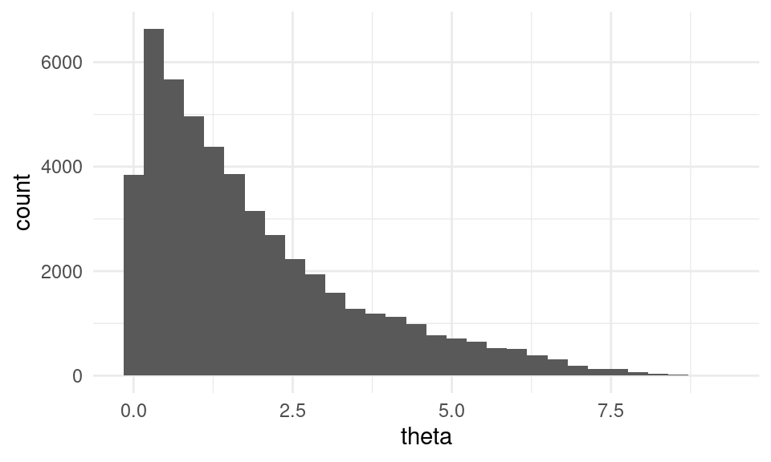
Ahora probemos con una \(\mathsf{Beta}(3, 2):\)
beta_no_norm <- function(x) {
z <- ifelse(x > 0 && x < 1, (x^2)*(1-x), 0)
log(z)
}
iterador_metro <- crear_metropolis(beta_no_norm, sigma_salto = 0.04)
sims_metro_tbl <- iterador_metro(c(theta = 0.5), 50000)
sims_indep_tbl <- tibble(iter_num = 1:30000, theta = rbeta(30000, 3, 2))
g_1 <- ggplot(sims_metro_tbl, aes(x = theta)) + geom_histogram() +
labs(subtitle = "Metrópolis")
g_2 <- ggplot(sims_indep_tbl, aes(x = theta)) +
geom_histogram() +
labs(subtitle = "rbeta")
g_1 + g_2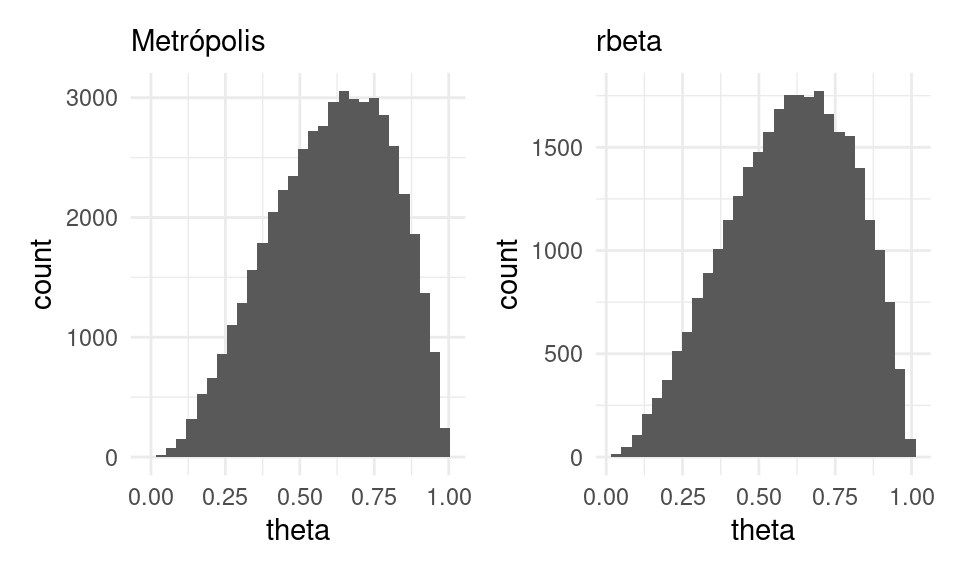 Y vemos que esto funciona. Revisa el ejemplo de las islas en Kruschke (2015) (7.2) para tener más intuición de cómo funciona este algoritmo.
Nótese sin embargo un aspecto de estas simulaciones que no habíamos encontrado en el curso. Aunque la distribución final de las simulaciones es muy cercana a la de la distribución que queremos simular, lo cual era nuestro propósito, las simulaciones no son extracciones independientes de esa distribución.
La construcción del algoritmo muestra eso, pero podemos también graficar las simulaciones:
g_metropolis <- sims_metro_tbl %>%
filter(iter_num < 500) %>%
ggplot(aes(x = iter_num, y = theta)) +
geom_line() + labs(subtitle = "Metrópolis")
g_indep <- sims_indep_tbl %>%
filter(iter_num < 500) %>%
ggplot(aes(x = iter_num, y = theta)) +
geom_line() + labs(subtitle = "Independientes")
g_metropolis + g_indep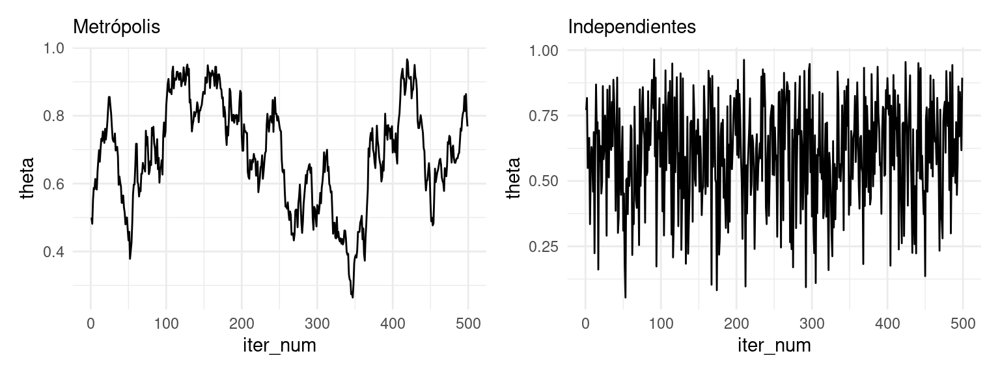
Donde vemos claramente que las simulaciones de metropolis están autocorrelacionadas: la siguiente simulación depende de la anterior. Esto define una cadena de Markov.
En cualquiera de los dos casos, como vimos en los histogramas de arriba, las simulaciones “visitan” cada parte [0,1] de manera proporcional a la densidad, de manera que podemos usar ambos tipos de simulaciones para aproximar la integral o cantidad que nos interesa. Por ejemplo, la media posterior es:
media_1 <- sims_metro_tbl %>% summarise(media_post = mean(theta)) %>% pull(media_post)
media_2 <- sims_indep_tbl %>% summarise(media_post = mean(theta)) %>% pull(media_post)
media_exacta <- 3/(3 + 2)
tibble(metodo = c("sim Metrópolis", "sim Independiente", "exacto"),
media_post = c(media_1, media_2, media_exacta))## # A tibble: 3 × 2
## metodo media_post
## <chr> <dbl>
## 1 sim Metrópolis 0.603
## 2 sim Independiente 0.599
## 3 exacto 0.6Supongamos que queremos simular de una distribución \(p(\theta)\), pero sólo conocemos \(p(\theta)\) módulo una constante. Bajo ciertas condiciones de regularidad:
El algoritmo Metrópolis para la distribución \(p(\theta)\) define una cadena de Markov cuya distribución a largo plazo es \(p(\theta)\). Esto implica que si \(\theta^{(1)},\theta^{(2)}, \ldots, \theta^{(M)}\) es una simulación de esta cadena, y \(M\) es suficientemente grande
- La distribución de las \(\theta^{(i)}\) es aproximadamente \(p(\theta)\),
- Tenemos que \[ \frac1M \sum_{m = 1}^M h(\theta^{(m)}) \to \int h(\theta)p(\theta)\, d\theta\] cuando \(M\to \infty\)
Observaciones:
Aunque hay distintas condiciones de regularidad que pueden funcionar, generalmente el supuesto es que la cadena de Markov construída es ergódica, y hay varias condiciones que garantizan esta propiedad. Una condición simple, por ejemplo, es que el soporte de la distribución \(p(\theta)\) es un conjunto conexo del espacio de parámetros.
Más crucialmente, este resultado no dice qué tan grande debe ser \(M\) para que la aproximación sea buena. Esto depende de cómo es \(p(\theta)\), y de la distribución que se utiliza para obtener los saltos propuestos. Dependiendo de estos dos factores, la convergencia puede ser rápida (exponencial) o tan lenta que es infactible usarla. Más adelante veremos diagnósticos para descartar los peores casos de falta de convergencia.
Ajustando el tamaño de salto
En el algoritmo Metrópolis, generalmente es importante escoger la dispersión de la distribución que genera propuestas con cuidado.
- Si la dispersión de la propuesta es demasiado grande, tenderemos a rechazar mucho, y la convergencia será lenta.
- Si la dispersión de la propuesta es demasiado chica, tardaremos mucho tiempo en explorar las distintas partes de la distribución objetivo.
Ejemplo
Supongamos que queremos simular usando metróplis de una distribución \(\textsf{Gamma}(20, 100)\). Abajo vemos la forma de esta distribución:
sim_indep <- tibble(theta = rgamma(10000, 20, 100))
ggplot(sim_indep, aes(x = theta)) + geom_histogram()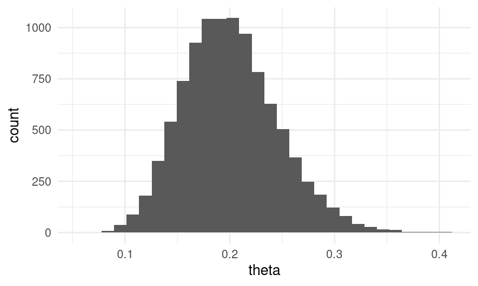
# logaritmo de densidad no normalizada
log_f_dist <- function(x) 210 + dgamma(x, 20, 100, log = TRUE)
# iterar
iterador_metro_chico <- crear_metropolis(log_f_dist, sigma_salto = 0.001)
sims_chico_tbl <- iterador_metro_chico(c(theta = 0.02), 50000)
g_sim <- ggplot(sims_chico_tbl %>% filter(iter_num < 3000), aes(x = iter_num, y = theta)) + geom_line() + ylim(c(0, 0.5))
dist_bplot <- ggplot(tibble(x = rgamma(10000, 20, 100)), aes(y = x, x = "a")) + geom_violin() + ylab("") + ylim(0, 0.5)
g_sim + dist_bplot + plot_layout(widths = c(5, 1))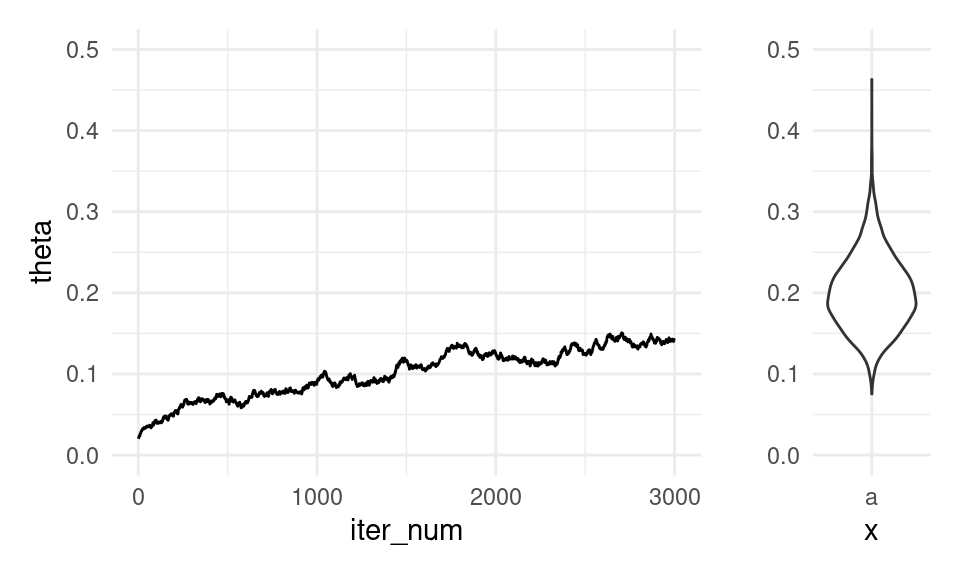
Nótese que después de 5 mil iteraciones estamos muy lejos de tener una muestra que se aproxime a la distribución objetivo. Empezamos en un lugar bajo, y la cadena sólo ha ido lentamente hacia las zonas de alta densidad. Cualquier resumen con esta cadena estaría fuertemente sesgado al valor donde iniciamos la iteración. Decimos que la cadena todavía no mezcla en las primeras 5 mil iteraciones.
Ahora vemos qué pasa si ponemos el tamaño de salto demasiado grande:
set.seed(831)
iterador_metro_grande <- crear_metropolis(log_f_dist, sigma_salto = 20)
sims_grande_tbl <- iterador_metro_grande(c(theta = 0.02), 50000)
g_sim <- ggplot(sims_grande_tbl %>% filter(iter_num < 3000), aes(x = iter_num, y = theta)) + geom_line() + ylim(c(0, 0.5))
g_sim + dist_bplot + plot_layout(widths = c(5, 1))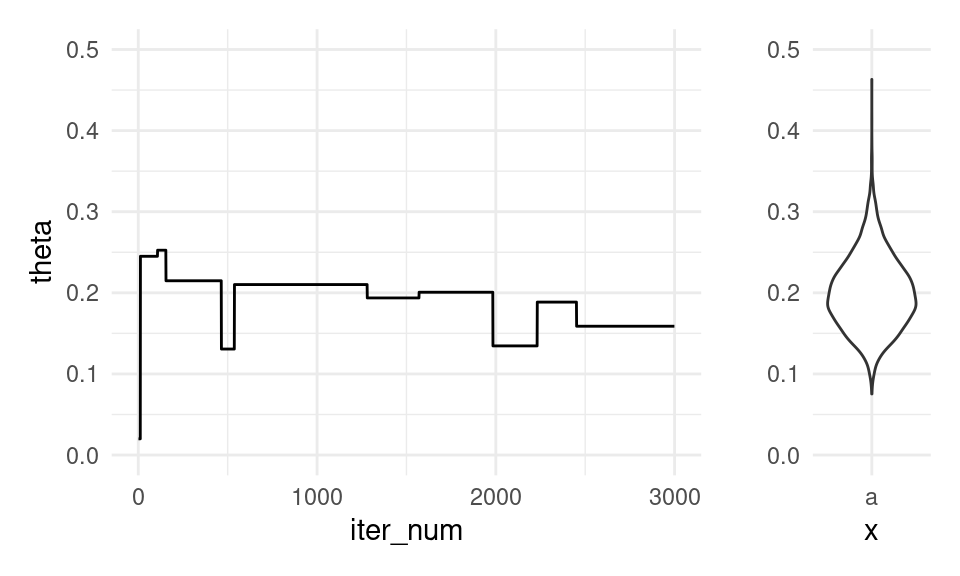
En este caso, la cadena se atora muchas veces, pues las propuestas tienen probabilidad muy baja, y tendemos a tener una tasa de rechazos muy alta. Esto quiere decir que la información que tenemos acerca de la posterior es relativamente poca, pues muchos datos son repeticiones del mismo valor. Cualquier resumen con esta cadena podría estar muy lejos del verdadero valor, pues su varianza es alta - otra corrida se “atoraría” en otros valores distintos.
Nótese que cualquiera de estas cadenas, si la corremos suficientemente tiempo, nos daría resultados buenos. Sin embargo, el número de simulaciones puede ser infactible.
Un valor intermedio nos dará mucho mejores resultados:
set.seed(831)
iterador_metro_apropiada <- crear_metropolis(log_f_dist, sigma_salto = 0.1)
sims_tbl <-iterador_metro_apropiada(c(theta = 0.02), 50000)
g_sim <- ggplot(sims_tbl %>% filter(iter_num < 3000),
aes(x = iter_num, y = theta)) + geom_line() + ylim(c(0, 0.5))
g_sim + dist_bplot + plot_layout(widths = c(5, 1))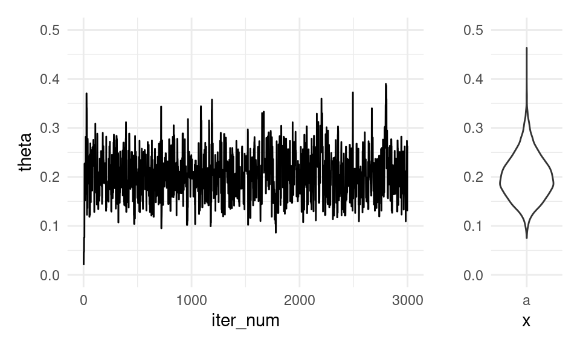 Donde vemos que esta cadena parece mezclar bien (está explorando la totalidad de la distribución objetivo), y también parece estar en un estado estable.
Comparemos cómo saldría por ejemplo la media posterior aproximada según los tres métodos:
estimaciones_media <- map_dfr(
list(sims_chico_tbl, sims_grande_tbl, sims_tbl),
~ filter(.x, iter_num < 3000) %>%
summarise(media = mean(theta))) %>%
mutate(tipo = c("salto chico", "salto grande", "salto apropiado"))
estimaciones_media %>% bind_rows(tibble(tipo = "exacta", media = 20/100)) %>%
select(tipo, media)## # A tibble: 4 × 2
## tipo media
## <chr> <dbl>
## 1 salto chico 0.101
## 2 salto grande 0.190
## 3 salto apropiado 0.203
## 4 exacta 0.2Veamos otra corrida:
set.seed(6222131)
sims_chica_tbl <- iterador_metro_chico(c(theta = 0.02), 5000)
sims_grande_tbl <- iterador_metro_grande(c(theta = 0.02), 5000)
estimaciones_media <- map_dfr(
list(sims_chica_tbl, sims_grande_tbl, sims_tbl),
~ filter(.x, iter_num < 3000) %>%
summarise(media = mean(theta))) %>%
mutate(tipo = c("salto chico", "salto grande", "salto apropiado"))
estimaciones_media %>% bind_rows(tibble(tipo = "exacta", media = 20/100)) %>%
select(tipo, media)## # A tibble: 4 × 2
## tipo media
## <chr> <dbl>
## 1 salto chico 0.124
## 2 salto grande 0.229
## 3 salto apropiado 0.203
## 4 exacta 0.2Repite este proceso varias veces. Verifica que:
- Si el tamaño de paso es muy chico, las estimaciones de la media tienen sesgo alto.
- Si el tamaño de paso es muy grande, las estimaciones tienen varianza alta.
- Si el tamaño de paso es adecuado, obtenemos buena precisión en la estimación de la media posterior.
- Explica estos tres casos en términos de la convergencia de las realizaciones de la cadena de Markov. Explica cómo afecta a cada caso el valor inicial de las simulaciones de Metrópolis.
- Repite para otra estadística, como la desviación estándar o el rangon intercuartil.
¿Por qué funciona Metrópolis?
Veremos un ejemplo relativemente simple que nos puede ayudar a mejorar nuestra intuición acerca de este algoritmo.
Supongamos que un vendedor de Yakult trabaja a lo largo de una cadena de islas:
Constantemente viaja entre las islas ofreciendo sus productos;
Al final de un día de trabajo decide si permanece en la misma isla o se transporta a una de las \(2\) islas vecinas;
El vendedor ignora la distribución de la población en las islas y el número total de islas; sin embargo, una vez que se encuentra en una isla puede investigar la población de la misma y también de la isla a la que se propone viajar después.
El objetivo del vendedor es visitar las islas de manera proporcional a la población de cada una. Con esto en mente el vendedor utiliza el siguiente proceso:
- Lanza un volado, si el resultado es águila se propone ir a la isla del lado izquierdo de su ubicación actual y si es sol a la del lado derecho.
- Si la isla propuesta en el paso anterior tiene población mayor a la población de la isla actual, el vendedor decide viajar a ella. Si la isla vecina tiene población menor, entonces visita la isla propuesta con una probabilidad que depende de la población de las islas. Sea \(P^*\) la población de la isla propuesta y \(P_{t}\) la población de la isla actual. Entonces el vendedor cambia de isla con probabilidad \[q_{mover}=P^*/P_{t}\]
A la larga, si el vendedor sigue la heurística anterior la probabilidad de que el vendedor este en alguna de las islas coincide con la población relativa de la isla.
islas <- tibble(islas = 1:10, pob = 1:10)
camina_isla <- function(i){ # i: isla actual
u <- runif(1) # volado
v <- ifelse(u < 0.5, i - 1, i + 1) # isla vecina (índice)
if (v < 1 | v > 10) { # si estas en los extremos y el volado indica salir
return(i)
}
u2 <- runif(1)
p_move = min(islas$pob[v] / islas$pob[i], 1)
if (p_move > u2) {
return(v) # isla destino
}
else {
return(i) # me quedo en la misma isla
}
}
pasos <- 100000
iteraciones <- numeric(pasos)
iteraciones[1] <- sample(1:10, 1) # isla inicial
for (j in 2:pasos) {
iteraciones[j] <- camina_isla(iteraciones[j - 1])
}
caminata <- tibble(pasos = 1:pasos, isla = iteraciones)
plot_caminata <- ggplot(caminata[1:1000, ], aes(x = pasos, y = isla)) +
geom_point(size = 0.8) +
geom_path(alpha = 0.5) +
coord_flip() +
labs(title = "Caminata aleatoria") +
scale_y_continuous(expression(theta), breaks = 1:10) +
scale_x_continuous("Tiempo")
plot_dist <- ggplot(caminata, aes(x = isla)) +
geom_histogram() +
scale_x_continuous(expression(theta), breaks = 1:10) +
labs(title = "Distribución objetivo",
y = expression(P(theta)))
plot_caminata / plot_dist
Entonces:
Para aproximar la distribución objetivo debemos permitir que el vendedor recorra las islas durante una sucesión larga de pasos y registramos sus visitas.
Nuestra aproximación de la distribución es justamente el registro de sus visitas.
Más aún, debemos tener cuidado y excluir la porción de las visitas que se encuentran bajo la influencia de la posición inicial. Esto es, debemos excluir el periodo de calentamiento.
Una vez que tenemos un registro largo de los viajes del vendedor (excluyendo el calentamiento) podemos aproximar la distribución objetivo simplemente contando el número relativo de veces que el vendedor visitó dicha isla.
t <- c(1:10, 20, 50, 100, 200, 1000, 5000)
plots_list <- map(t, function(i){
ggplot(caminata[1:i, ], aes(x = isla)) +
geom_histogram() +
labs(y = "", x = "", title = paste("t = ", i, sep = "")) +
scale_x_continuous(expression(theta), breaks = 1:10, limits = c(0, 11))
})
wrap_plots(plots_list)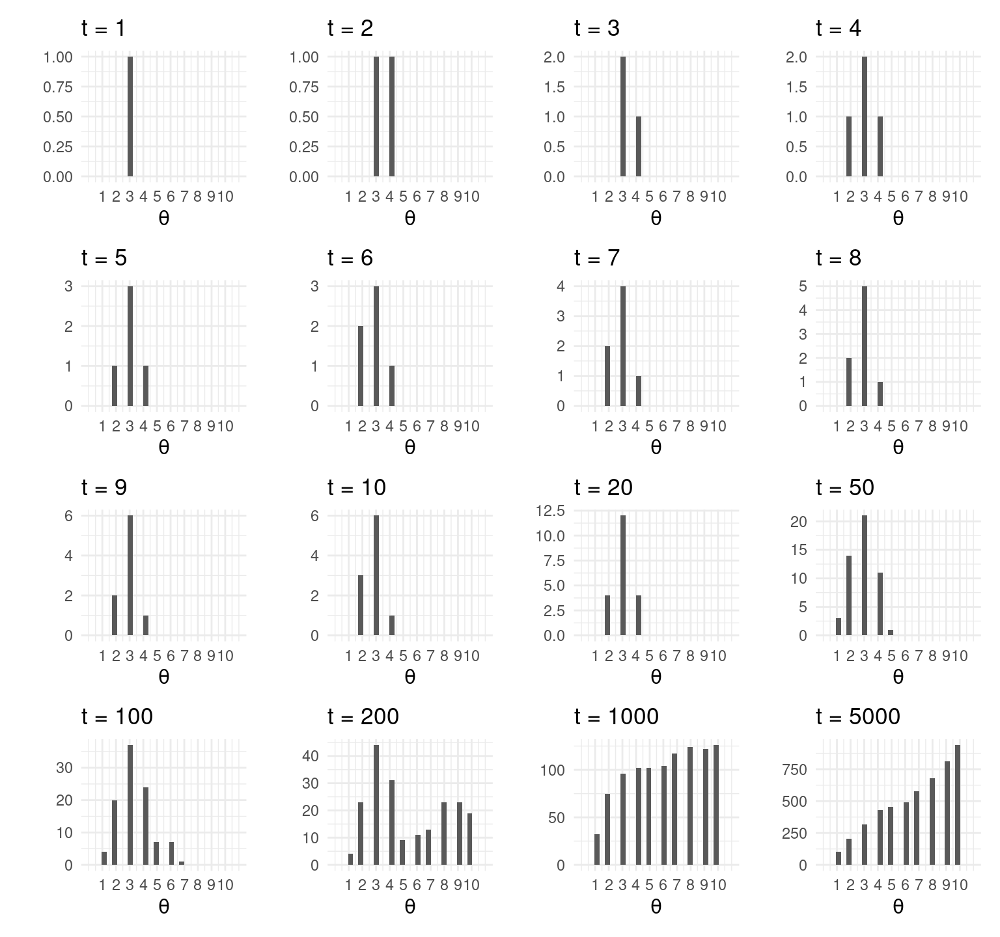
Escribamos el algoritmo, para esto indexamos las islas por el valor \(\theta\), es así que la isla del extremo oeste corresponde a \(\theta=1\) y la población relativa de cada isla es \(P(\theta)\):
El vendedor se ubica en \(\theta^{(i)}\) y propone moverse a la izquierda o derecha con probabilidad \(0.5\).
El rango de los posibles valores para moverse, y la probabilidad de proponer cada uno se conoce como distribución propuesta, en nuestro ejemplo sólo toma dos valores cada uno con probabilidad \(0.5\).Una vez que se propone un movimiento, decidimos si aceptarlo. La decisión de aceptar se basa en el valor de la distribución objetivo en la posición propuesta, relativo al valor de la distribución objetivo en la posición actual: \[\alpha=\min\bigg\{\frac{P(\theta^*)}{P(\theta^{(i)})},1\bigg\},\] donde \(\alpha\) denota la probabilidad de hacer el cambio de isla.
Notemos que la distribución objetivo \(P(\theta)\) no necesita estar normalizada, esto es porque lo que nos interesa es el cociente \(P(\theta^*)/P(\theta^{(i)})\).
- Una vez que propusimos un movimiento y calculamos la probabilidad de aceptar el movimiento aceptamos o rechazamos el movimiento generando un valor de una distribución uniforme, si dicho valor es menor a la probabilidad de cambio, \(\alpha,\) entonces hacemos el movimiento.
Entonces, para utilizar el algoritmo necesitamos ser capaces de:
Generar un valor de la distribución propuesta, que hemos denotado por \(q,\) (para crear \(\theta^*\)).
Evaluar la distribución objetivo en cualquier valor propuesto (para calcular \(P(\theta^*)/P(\theta^{(i)})\)).
Generar un valor uniforme (para movernos con probabilidad \(\alpha\)).
Las \(3\) puntos anteriores nos permiten generar muestras aleatorias de la distribución objetivo, sin importar si esta está normalizada. Esta técnica es particularmente útil cuando cuando la distribución objetivo es una posterior proporcional a \(p(x|\theta)p(\theta)\).
Para entender porque funciona el algoritmo de Metrópolis hace falta entender \(2\) puntos, primero que la distribución objetivo es estable: si la probabilidad actual de ubicarse en una posición coincide con la probabilidad en la distribución objetivo, entonces el algoritmo preserva las probabilidades.
library(expm)
transMat <- function(P){ # recibe vector de probabilidades (o población)
T <- matrix(0, 10, 10)
n <- length(P - 1) # número de estados
for (j in 2:n - 1) { # llenamos por fila
T[j, j - 1] <- 0.5 * min(P[j - 1] / P[j], 1)
T[j, j] <- 0.5 * (1 - min(P[j - 1] / P[j], 1)) +
0.5 * (1 - min(P[j + 1] / P[j], 1))
T[j, j + 1] <- 0.5 * min(P[j + 1] / P[j], 1)
}
# faltan los casos j = 1 y j = n
T[1, 1] <- 0.5 + 0.5 * (1 - min(P[2] / P[1], 1))
T[1, 2] <- 0.5 * min(P[2] / P[1], 1)
T[n, n] <- 0.5 + 0.5 * (1 - min(P[n - 1] / P[n], 1))
T[n, n - 1] <- 0.5 * min(P[n - 1] / P[n], 1)
T
}
T <- transMat(islas$pob)
w <- c(0, 1, rep(0, 8))
t <- c(1:10, 20, 50, 100, 200, 1000, 5000)
expT <- map_df(t, ~data.frame(t = ., w %*% (T %^% .)))
expT_long <- expT %>%
gather(theta, P, -t) %>%
mutate(theta = parse_number(theta))
ggplot(expT_long, aes(x = theta, y = P)) +
geom_bar(stat = "identity", fill = "darkgray") +
facet_wrap(~ t) +
scale_x_continuous(expression(theta), breaks = 1:10, limits = c(0, 11))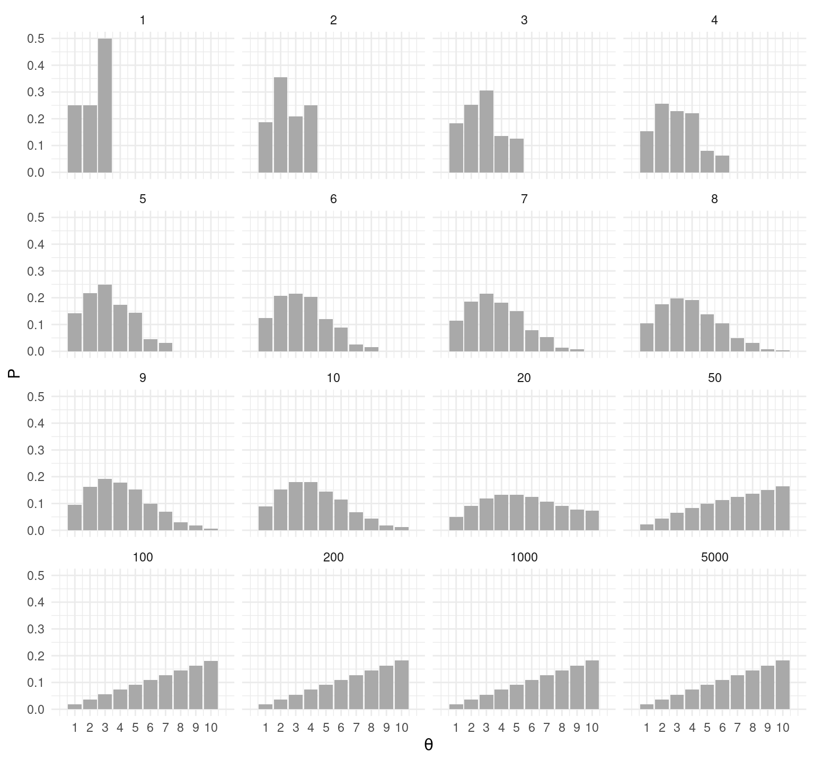
El segundo punto es que el proceso converge a la distribución objetivo. Podemos ver, (en nuestro ejemplo sencillo) que sin importar el punto de inicio se alcanza la distribución objetivo.
inicio_p <- function(i){
w <- rep(0, 10)
w[i] <- 1
t <- c(1, 10, 50, 100)
exp_t <- map_df(t, ~ data.frame(t = .x, inicio = i, w %*% (T %^% .))) %>%
gather(theta, P, -t, -inicio) %>%
mutate(theta = parse_number(theta))
exp_t
}
exp_t <- map_df(c(1, 3, 5, 9), inicio_p)
ggplot(exp_t, aes(x = as.numeric(theta), y = P)) +
geom_bar(stat = "identity", fill = "darkgray") +
facet_grid(inicio ~ t) +
scale_x_continuous(expression(theta), breaks = 1:10, limits = c(0, 11))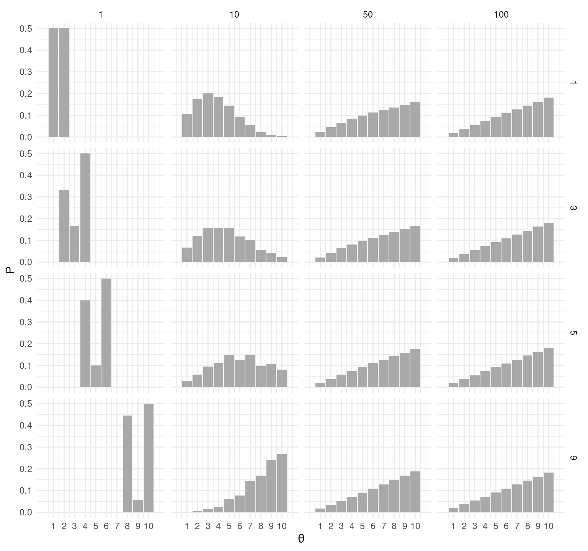
Metrópolis con varios parámetros
Ahora aplicaremos el algoritmo Metrópolis cuando tenemos varios parámetros. La idea es la misma, pero nuestra distribución de salto debe ser multivariada. Una selección usual es usando saltos normales independientes para cada parámetro, es decir, la normal multivariada con matriz de varianza y covarianza diagonal.
Ejemplo: el modelo normal
Veremos cómo simular con Metrópolis para el problema de los cantantes. Sabemos como calcular la posterior:
crear_log_posterior_norm <- function(x = datos, m_0, n_0, a, b){
# calcula log_posterior
log_posterior <- function(mu, sigma){
log_verosim <- sum(dnorm(x, mu, sigma, log = TRUE))
tau <- 1 / sigma^2
log_inicial <-
dgamma(tau, a, b, log = TRUE) +
dnorm(mu, mu_0, sigma/sqrt(n_0), log = TRUE)
log_p <- log_verosim + log_inicial
log_p
}
log_posterior
}# parametros de inicial y datos
a <- 3
b <- 140
mu_0 <- 175
n_0 <- 5
set.seed(3413)
cantantes <- lattice::singer %>%
mutate(estatura_cm = round(2.54 * height)) %>%
filter(str_detect(voice.part, "Tenor")) %>%
sample_n(20)Vemos cómo se ven las primeras iteraciones de nuestra cadena de Markov:
log_p <- crear_log_posterior_norm(cantantes$estatura_cm, mu_0, n_0, a, b)
log_post <- function(pars) { log_p(pars[1], pars[2]) }
set.seed(823)
metro_normal <- crear_metropolis(log_post, sigma_salto = 0.5)
sim_tbl <- metro_normal(c(mu = 172, sigma = 3), 50000)
ggplot(sim_tbl %>% filter(iter_num < 100),
aes(x = mu, y = sigma)) +
geom_path() +
geom_point()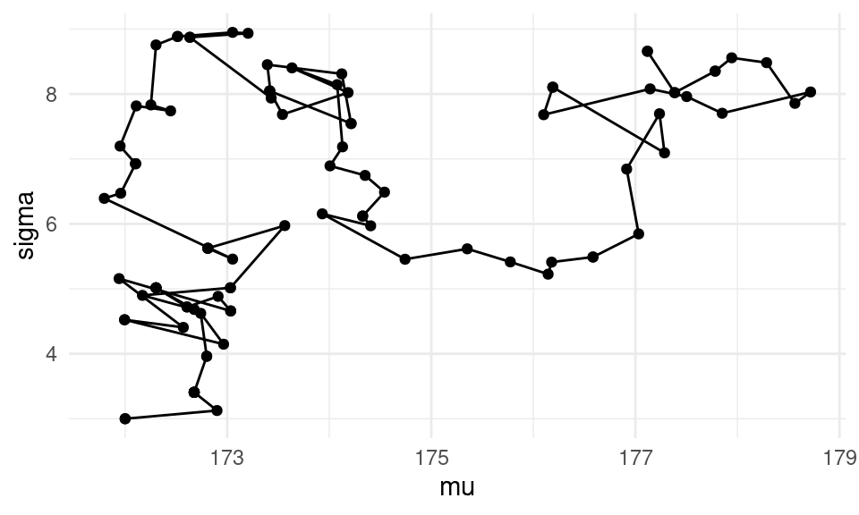
Y ahora vemos todas las simulaciones:
g_normal <- ggplot(sim_tbl, aes(x = mu, y = sigma)) +
geom_point(alpha = 0.05)+ coord_equal() + ylim(c(0, 14))
g_normal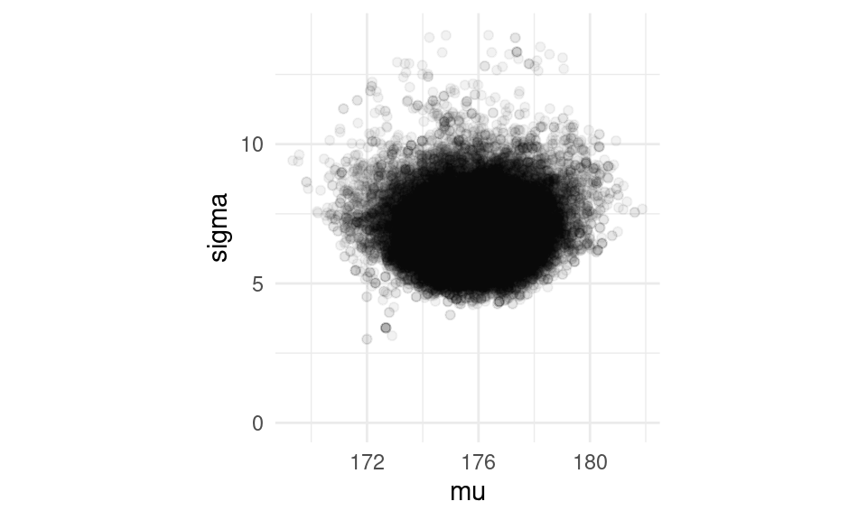
Y las medias posteriores son:
sim_tbl %>% summarise(across(is_double, mean))## # A tibble: 1 × 2
## mu sigma
## <dbl> <dbl>
## 1 176. 6.80Ejemplo: observaciones normales, no conjugado
Arriba repetimos el análisis conjugado usando Metrópolis. Aunque ya no es necesario usar el modelo conjugado, y podemos poner iniciales que sean más intuitivas y acorde con nuestro conocimiento existente.
Por ejemplo, podemos poner \(p(\mu, \sigma) = p(\mu)p(\sigma)\), donde la densidad de \(\mu \sim \mathsf{N}(175, 2)\) y \(\sigma \sim \mathsf{U}[2, 20].\) Igual que antes, la verosimilitud \(p(x|\mu, \sigma)\) es normal con media \(\mu\) y desviación estándar \(\sigma.\)
Escribimos la posterior:
crear_log_posterior <- function(x, m_0, sigma_0, inf, sup){
# calcula log_posterior
log_posterior <- function(mu, sigma){
log_verosim <- sum(dnorm(x, mu, sigma, log = TRUE))
log_inicial <-
dunif(sigma, inf, sup, log = TRUE) +
dnorm(mu, mu_0, sigma_0, log = TRUE)
log_p <- log_verosim + log_inicial
log_p
}
log_posterior
}log_p <- crear_log_posterior(cantantes$estatura_cm, 175, 3, 2, 20)
log_post <- function(pars) { log_p(pars[1], pars[2]) }set.seed(8231)
metro_normal <- crear_metropolis(log_post, sigma_salto = 0.5)
sim_tbl <- metro_normal(c(mu = 172, sigma = 5), 50000)
g_normal_2 <- ggplot(sim_tbl, aes(x = mu, y = sigma)) +
geom_point(alpha = 0.05) + coord_equal() + ylim(c(0, 14))
g_normal + g_normal_2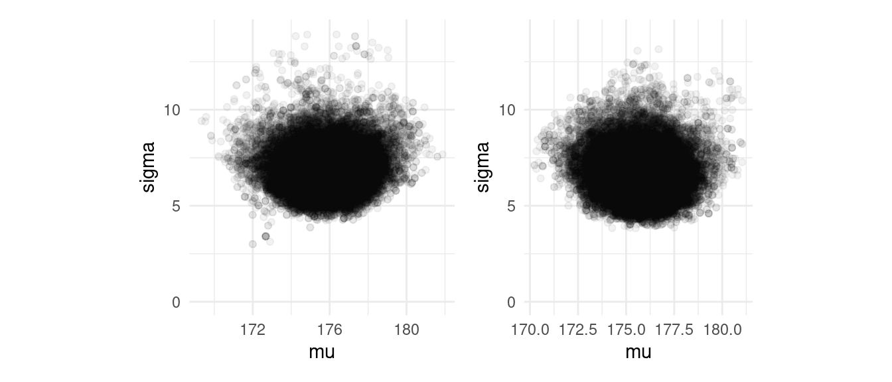 Los resultados son similares, pero en nuestras estimaciones bajo el segundo modelo, la \(\sigma\) está concentrada en valores un poco más bajos que el modelo normal-gamma inversa. Las medias posteriores son:
sim_tbl %>% summarise(across(is.numeric, mean))## # A tibble: 1 × 3
## iter_num mu sigma
## <dbl> <dbl> <dbl>
## 1 25000. 176. 6.54Nótese que la inicial para el modelo normal-gamma inversa pone muy poca probabilidad para valores bajos de \(\sigma\), mientras que el segundo modelo hay un 10% de probabilidad de que la \(\sigma\) sea menor que 4.
tau <- rgamma(5000, 3, 150)
sigma <- 1/sqrt(tau)
quantile(sigma, c(0.01,0.1, 0.9, 0.99))## 1% 10% 90% 99%
## 4.219278 5.276228 11.579358 19.038529quantile(runif(5000, 2, 25), c(0.01,0.1, 0.9, 0.99))## 1% 10% 90% 99%
## 2.261297 4.254128 22.691760 24.719630Ejemplo: exámenes
Recordamos un ejemplo que vimos en la sección de máxima verosimilitud. Supongamos que en una población de estudiantes tenemos dos tipos: unos llenaron un examen de opción múltiple al azar (1 de 5), y otros contestaron las preguntas intentando sacar una buena calificación. Suponemos que una vez que conocemos el tipo de estudiante, todas las preguntas tienen la misma probabilidad de ser contestadas correctamente, de manera independiente. El modelo teórico está representado por la siguiente simulación:
sim_formas <- function(p_azar, p_corr){
tipo <- rbinom(1, 1, 1 - p_azar)
if(tipo==0){
# al azar
x <- rbinom(1, 10, 1/5)
} else {
# no al azar
x <- rbinom(1, 10, p_corr)
}
x
}Y una muestra se ve como sigue:
set.seed(12)
muestra <- map_dbl(1:200, ~ sim_formas(0.35, 0.5))
qplot(muestra)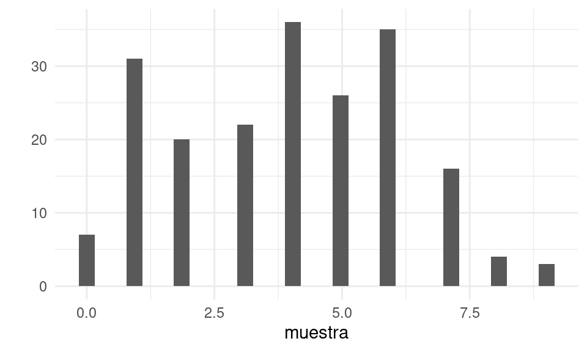
Supongamos que no conocemos la probabildad de contestar correctamente ni la proporción de estudiantes que contestó al azar. ¿Como estimamos estas dos cantidades?
La verosimilitud la escribimos en el ejercicio anterior en la sección de máxima verosimilitud, está dada, para las repuestas de un estudiante, por:
\[p(X = k|\theta_{azar}, \theta_{corr}) \propto \theta_{azar}(1/5)^k(4/5)^{10-k} + (1-\theta_{azar})\theta_{corr}^k(1-\theta_{corr})^{10-k}\]
Suponiendo que todas las preguntas tienen la misma dificultad, y que los estudiantes que estudiaron son homogéneos (podemos discutir qué haríamos para introducir heterogeneidad que típicamente observaríamos).
Creemos que la mayoría de los estudiantes no contesta al azar, así que pondremos como inicial
\[\theta_{azar} \sim \mathsf{Beta}(1, 5)\]
qbeta(c(0.1, 0.9), 1, 5) %>% round(2)## [1] 0.02 0.37Ahora tenemos que pensar en la probabilidad \(\theta_{corr}\) para los estudiantes que sí estudiaron. Imaginemos que lo probamos con un estudiante que sabemos que sí estudió, y obtuvo un porcentaje de correctos de 7/10, Podríamos poner entonces (vimos 10 intentos, con 3 fracasos y 7 éxitos):
\[\theta_{corr} \sim \mathsf{Beta}(7, 3)\] Finalmente, necesitamos la conjunta inicial. Pondremos \[p(\theta_{azar},\theta_{corr}) = p(\theta_{azar})p(\theta_{corr})\] con lo que expresamos que inicialmente no creemos que estos dos parámetros estén relacionados. Si pensáramos, por ejemplo, que cuando hacemos exámenes difíciles menos estudiantes estudian, entonces deberíamos intentar otra conjunta.
Escribimos el producto de la verosimilitud con la inicial:
crear_log_posterior <- function(x){
log_posterior <- function(theta_azar, theta_corr){
log_verosim <- sum(log(theta_azar * dbinom(x, 10, 1/5) +
(1 - theta_azar) * dbinom(x, 10, theta_corr)))
log_inicial <- dbeta(theta_azar, 1, 5, log = TRUE) +
dbeta(theta_corr, 7, 3, log = TRUE)
log_post <- log_verosim + log_inicial
log_post
}
log_posterior
}Creamos la función de verosimilitud con los datos
log_p <- crear_log_posterior(muestra)
log_post <- function(pars) { log_p(pars[1], pars[2]) }
set.seed(8231)
metro_examenes <- crear_metropolis(log_post, sigma_salto = 0.02)
sim_tbl <- metro_examenes(c(theta_azar = 0.5, theta_corr = 0.5), 20000)
g_1 <- ggplot(sim_tbl, aes(x = theta_azar, y = theta_corr)) +
geom_point(alpha = 0.05) + coord_equal()
g_1 Nótese que hay cierta correlación entre las dos proporciones, y esto produce
intervalos posteriores relativamente amplios. Esto es de esperarse, pues
los datos son consistentes con una proporción relativamente chica de
estudiantes que contestan al azar, y tasas de correctos más altas entre los
que sí estudian, y una proporción más grande de respuestas al azar con
tasas de correctos más altas.
Nótese que hay cierta correlación entre las dos proporciones, y esto produce
intervalos posteriores relativamente amplios. Esto es de esperarse, pues
los datos son consistentes con una proporción relativamente chica de
estudiantes que contestan al azar, y tasas de correctos más altas entre los
que sí estudian, y una proporción más grande de respuestas al azar con
tasas de correctos más altas.
f <- c(0.05, 0.5, 0.95)
sim_tbl %>%
pivot_longer(-iter_num, names_to = "parametro", values_to = "valor") %>%
group_by(parametro) %>%
summarise(cuantil = quantile(valor, f), f = f) %>%
mutate(cuantil = round(cuantil, 2)) %>%
pivot_wider(names_from = f, values_from = cuantil)## # A tibble: 2 × 4
## # Groups: parametro [2]
## parametro `0.05` `0.5` `0.95`
## <chr> <dbl> <dbl> <dbl>
## 1 theta_azar 0.3 0.38 0.45
## 2 theta_corr 0.5 0.52 0.56Muestreador de Gibbs
El algoritmo de Metrópolis es muy general y se puede aplicar a una gran variedad de problemas. Sin embargo, afinar los parámetros de la distribución propuesta para que el algoritmo funcione correctamente puede ser complicado. El muestredor de Gibbs no necesita de una distribución propuesta y por lo tanto no requiere afinar estos parámetros.
Para implementar un muestreador de Gibbs se necesita ser capaz de generar muestras de la distribución posterior condicional a cada uno de los parámetros individuales. Esto es, el muestreador de Gibbs permite generar muestras de la posterior: \[p(\theta_1,...,\theta_p|x)\] siempre y cuando podamos generar valores de todas las distribuciones condicionales: \[\theta_k \sim p(\theta_k|\theta_1,...,\theta_{k-1},\theta_{k+1},...,\theta_p,x).\]
El proceso del muestreador de Gibbs es una caminata aleatoria a lo largo del espacio de parámetros. La caminata inicia en un punto arbitrario y en cada tiempo el siguiente paso depende únicamente de la posición actual. Por tanto el muestredor de Gibbs es un proceso cadena de Markov vía Monte Carlo. La diferencia entre Gibbs y Metrópolis radica en como se deciden los pasos.
Muestreador Gibbs
En cada punto de la caminata se selecciona uno de los componentes del vector de parámetros (típicamente se cicla en orden):
Supongamos que se selecciona el parámetro \(k\)-ésimo después de haber modificado los \(k-1\) anteriores, entonces obtenemos un nuevo valor para este parámetro generando una simulación de la distribución condicional \[\theta_k^{(i+1)} \sim p(\theta_k|\theta_1^{(i+1)},\ldots,\theta_{k-1}^{(i+1)},\theta_{k+1}^{(i)},\ldots,\theta_p^{(i)},x)\]
El nuevo valor \(\theta_k^{(i+1)}\) junto con los valores \(\theta_1^{(i+1)},\ldots,\theta_{k-1}^{(i+1)},\theta_{k+1}^{(i)},\ldots,\theta_p^{(i)}\) constituyen la nueva posición en la caminata aleatoria.
Seleccionamos una nueva componente \(\theta_{k+1}^{(i+1)}\) y repetimos el proceso.
El muestreador de Gibbs es útil cuando no podemos determinar de manera analítica la distribución conjunta y no se puede simular directamente de ella, pero sí podemos determinar todas las distribuciones condicionales y simular de ellas.
Ejemplo: dos proporciones
Supongamos que queremos evaluar el balanceo de dos dados de 20 lados que produce una fábrica. En particular, evaluar la probabilidad de tirar un 20, y quizá escoger el dado que nos de mayor probabilidad de tirar un 20.
Tiramos cada dado \(n\) veces, y denotamos por \(X_1\) y \(X_2\) el número de 20’s que tiramos en cada ocasión. El modelo de datos está dado por \[p(x_1, x_2|\theta_1, \theta_2)\propto \theta_1^{x_1}(1-\theta_1)^{n - x_1}\theta_2^{x_2}(1-\theta_2)^{n - x_2},\] que es el producto de dos densidades binomiales, pues suponemos que las tiradas son independientes cuando conocemos los parámetros \(\theta_1\) y \(\theta_2\).
Ahora ponemos una inicial \[p(\theta_i)\sim \mathsf{Beta}(100, 1900)\]
y aquí están las razones de nuestra elección:
media <- 1/20
k <- 2000
a <- media * k
b <- (1 - media) * k
c(a,b)## [1] 100 1900qbeta(c(0.05, 0.95), a, b) %>% round(3)## [1] 0.042 0.058y suponemos que
\[p(\theta_1,\theta_2) = p (\theta_1)p(\theta_2)\]
es decir, apriori saber el desempeño de un dado no nos da información adicional del otro (esto podría no ser cierto, por ejemplo, si el defecto es provocado por la impresión del número 20).
Por lo tanto, la posterior es
\[p(\theta_1,\theta_2|x_1, x_2)\propto \theta_1^{x_1+100-1}(1-\theta_1)^{n - x_1 + 1900-1}\theta_2^{x_2+100 -1}(1-\theta_2)^{n - x_2 + 1900-1}\]
Ahora consideramoso qué pasa cuando conocemos \(\theta_2\) y los datos. Pensamos en todo lo que no sea \(\theta_1\) como constante de modo que nos queda:
\[p(\theta_1 | \theta_2, x) \propto \theta_1^{x_1+100 -1}(1-\theta_1)^{n - x_1 + 1900 -1}\] que es \(\mathsf{Beta}(x_1 + 100, n - x_1 + 1900)\), y por la misma razón,
\[p(\theta_2 | \theta_1, x) \propto \theta_2^{x_2+100-1}(1-\theta_2)^{n - x_2 + 1900-1}\]
que también es es \(\mathsf{Beta}(x_1 + 100, n - x_1 + 1900)\)
De hecho, estas condicionales son fáciles de deducir de otra manera: en realidad estamos haciendo dos experimentos separados (pues suponemos que las iniciales son independientes y las pruebas también), así que podriamos usar el análisis Beta-Binomial para cada uno de ellos. En realidad no es necesario usar MCMC para este ejemplo.
Usaremos esta función para hacer nuestras iteraciones de Gibbs:
iterar_gibbs <- function(pasos, n, x_1, x_2){
iteraciones <- matrix(0, nrow = pasos + 1, ncol = 2) # vector guardará las simulaciones
iteraciones[1, 1] <- 0.5 # valor inicial media
colnames(iteraciones) <- c("theta_1", "theta_2")
# Generamos la caminata aleatoria
for (j in seq(2, pasos, 2)) {
# theta_1
a <- x_2 + 100 - 1
b <- n - x_2 + 1900 - 1
iteraciones[j, "theta_2"] <- rbeta(1, a, b) # Actualizar theta_1
iteraciones[j, "theta_1"] <- iteraciones[j-1, "theta_1"]
# theta_2
a <- x_1 + 100 - 1
b <- n - x_1 + 1900 - 1
iteraciones[j + 1, "theta_1"] <- rbeta(1, a, b) # Actualizar theta_1
iteraciones[j + 1, "theta_2"] <- iteraciones[j, "theta_2"]
}
iteraciones
}Y supongamos que estamos comparando los dados de dos compañías: Chessex y GameScience. Tiramos cada dado 10 mil veces, y obtenemos:
# Datos de https://www.awesomedice.com/blogs/news/d20-dice-randomness-test-chessex-vs-gamescience
n <- 10000
x_1 <- 408 # Chessex, alrededor de 0.85 dólares por dado
x_2 <- 474 # GameScience, alrededor 1.60 dólares por dadoE iteramos:
iteraciones <- iterar_gibbs(20000, n, x_1, x_2) %>%
as_tibble() %>%
mutate(iter_num = row_number())
head(iteraciones)## # A tibble: 6 × 3
## theta_1 theta_2 iter_num
## <dbl> <dbl> <int>
## 1 0.5 0 1
## 2 0.5 0.0479 2
## 3 0.0442 0.0479 3
## 4 0.0442 0.0452 4
## 5 0.0411 0.0452 5
## 6 0.0411 0.0505 6ggplot(filter(iteraciones, iter_num > 1000, iter_num< 1050),
aes(x = theta_1, y = theta_2)) +
geom_path(alpha = 0.3) + geom_point() 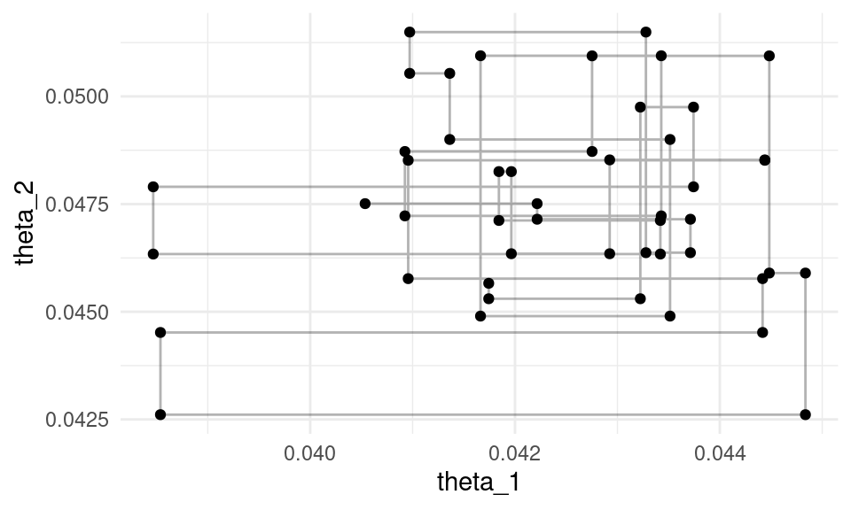
g_1 <- ggplot(iteraciones,
aes(x = theta_1, y = theta_2)) +
geom_path(alpha = 0.3) + geom_point()
g_2 <- ggplot(iteraciones %>% filter(iter_num > 10),
aes(x = theta_1, y = theta_2)) +
geom_path(alpha = 0.3) + geom_point() +
geom_abline(colour = "red") +
geom_point(data= tibble(theta_1=1/20, theta_2=1/20), colour = "red", size = 5)
g_1 + g_2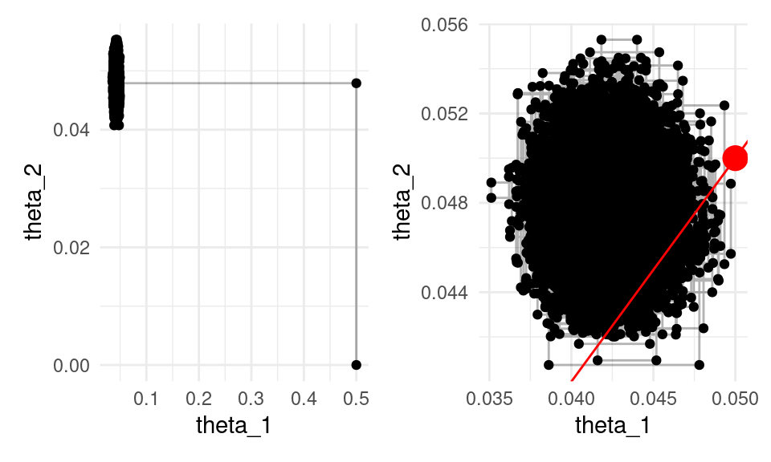
Notamos el dado de Cheesex no es consistente con 1/20 de tiros de 20s, pero el dado de GameScience sí lo es. De este gráfica vemos que Cheesex está sesgado hacia abajo, así que deberíamos escoger el dado de GameScience
Podemos ver directamente cómo se distribuye la diferencia \(\theta_1 - \theta_2\). Cualquier estadística es fácil de evaluar, pues simplemente la calculamos para cada simulación y después resumimos:
iteraciones <- iteraciones %>%
mutate(dif = theta_1 - theta_2)
ggplot(iteraciones %>% filter(iter_num > 10), aes(x = dif)) +
geom_histogram(bins = 100) +
geom_vline(xintercept = 0, colour = "red")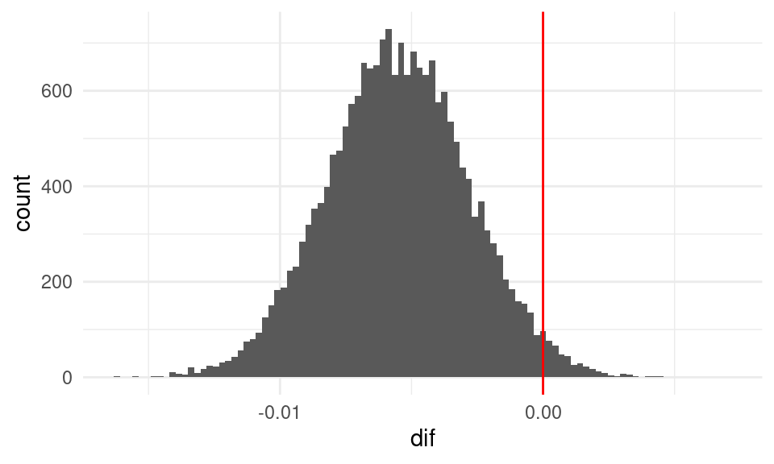
Y vemos que es altamente probable que el dado de Cheesex produce más 20’s que el dado de GameScience.
iteraciones %>% mutate(theta_1_mayor = dif > 0) %>%
summarise(prob_theta_1_mayor = mean(theta_1_mayor))## # A tibble: 1 × 1
## prob_theta_1_mayor
## <dbl>
## 1 0.0215Finalmente, verificamos nuestro modelo y cuánto aprendimos. Podemos hacerlo simulando de la inicial y comparando con la posterior:
inicial_tbl <- tibble(theta_1 = rbeta(20000, 100, 1900),
theta_2 = rbeta(20000, 100, 1900),
dist = "inicial")
posterior_tbl <- iteraciones %>% filter(iter_num > 10) %>%
mutate(dist = "posterior")
sims_tbl <- bind_rows(inicial_tbl, posterior_tbl)
ggplot(sims_tbl, aes(x = theta_1, y = theta_2, colour = dist)) +
geom_point(alpha = 0.2)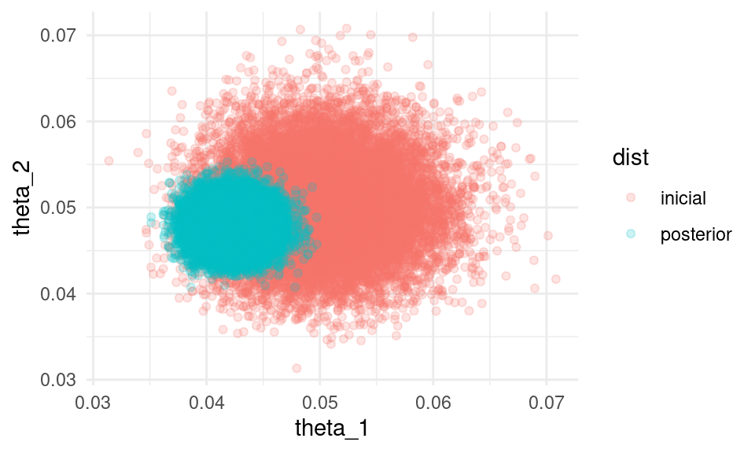 donde vemos que el resultado que obtuvimos es razonablemente consistente con nuestra información inicial, y las 10 mil tiradas de dado fueron altamente informativas.
¿Qué crees que pasaría si sólo hubieramos tirado 40 veces cada dado? ¿Qué tanto habríamos aprendido? Puedes usar datos simulados y repetir este ejercicio.
Puedes examinar los resultados para cada cara con los datos originales. Un modelo apropiado es el Dirichlet-Multinomial.
Ejemplo: Modelo normal no conjugado
Retomemos el caso de observaciones normales, supongamos que tenemos una muestra \(X_1,...,X_n\) de observaciones independientes e identicamente distribuidas, con \(X_i \sim \mathsf{N}(\mu, \sigma^2)\).
Usaremos iniciales distintas al modelo anterior:
\[p(\mu, \sigma^2) = p(\sigma^2)p(\mu)\] con \(\mu\) \(\mathsf{N}(\mu_0, \sigma_0)\) y \(\tau = 1/\sigma^2\) con distribución \(\mathsf{Gamma}(a,b)\). Esto no nos da el modelo conjugado que vimos antes (nota la diferencia de la especificación de la inicial conjunta).
Comenzamos por escribir
\[p(\mu, \sigma^2|x) \propto \frac{1}{{\sigma^{n/2}}} \exp(-\sum\frac{(x_i-\mu)²}{2\sigma^2}) \exp(- \frac{(\mu - \mu_0)^2}{2\sigma_0^2}) \frac{1}{(\sigma^2)^{a + 1}}\exp (-\beta/\sigma^2 )\]
Comenzamos analizando \(p(\mu|\sigma^2, x)\). Por la ecuación de arriba, e ignorando los términos que no dependen de \(\mu\): \[p(\mu|\sigma^2, x) \propto \exp [ - \sum_i (\frac{(\mu - x_i)^2}{2\sigma^2} - \frac{(\mu - \mu_0)^2}{2n\sigma_0^2})]\] que es una distribución normal (completa cuadrados):
\[\mu|\sigma^2,x \sim \mathsf{N}\bigg(\frac{\sigma^2}{\sigma^2 + n\sigma_0^2}\mu_0 + \frac{n\sigma_0^2}{\sigma^2 + n \sigma_0^2}\bar{x}, \frac{\sigma \sigma_0}{\sqrt{\sigma^2 + n\sigma_0^2}}\bigg)\]
Ahora consideramos \(p(\sigma^2|mu,x)\). Ignoramos en \(p(\mu,\sigma^2|x)\) los términos que *no** dependen de \(\sigma^2\):
\[p(\sigma^2|\mu, x) \propto \frac{1}{\sigma^{n/2}} \exp(-\sum\frac{(x_i-\mu)²}{2\sigma^2}) \frac{1}{(\sigma^2)^{a + 1}}\exp (-\beta/\sigma^2)\] que simplificando da
\[ = \frac{1}{\sigma^{n/2 + a + 1}}\exp( -\frac{\beta +\frac{1}{2}\sum(x_i - \mu)^2}{\sigma^2} )\] de modo que
\[\sigma^2|\mu, x \sim \mathsf{GI}(a +n/2, b + \frac{1}{2}\sum(x_i -\mu)^2)\]
Ejemplo
Usaremos este muestreador para el problema de la estaturas de los tenores. Comenzamos definiendo las distribuciones iniciales:
\(\mu \sim \mathsf{N}(175, 3)\)
\(\tau = 1/\sigma^2 \sim \mathsf{GI}(3, 150)\), esto es \(a = 3\) y \(b = 150\).
Escribimos el muestreador de Gibbs.
n <- 20
x <- cantantes$estatura_cm
m <- 175; sigma_0 <- 3; alpha <- 3; beta <- 150 # parámetros de iniciales
pasos <- 20000
iteraciones <- matrix(0, nrow = pasos + 1, ncol = 2) # vector guardará las simulaciones
iteraciones[1, 1] <- 0 # valor inicial media
colnames(iteraciones) <- c("mu", "sigma")
# Generamos la caminata aleatoria
for (j in seq(2, pasos, 2)) {
# sigma^2
mu <- iteraciones[j - 1, "mu"]
a <- n / 2 + alpha
b <- sum((x - mu) ^ 2) / 2 + beta
iteraciones[j, "sigma"] <- sqrt(1/rgamma(1, a, b)) # Actualizar sigma
iteraciones[j, "mu"] <- iteraciones[j-1, "mu"]
# mu
sigma <- iteraciones[j, "sigma"]
media <- (n * sigma_0^2 * mean(x) + sigma^2 * m) / (n * sigma_0^2 + sigma^2)
varianza <- sigma^2 * sigma_0^2 / (n * sigma_0^2 + sigma^2)
iteraciones[j+1, "mu"] <- rnorm(1, media, sd = sqrt(varianza)) # actualizar mu
iteraciones[j+1, "sigma"] <- iteraciones[j, "sigma"]
}
caminata <- data.frame(pasos = 1:pasos, mu = iteraciones[1:pasos, "mu"],
sigma = iteraciones[1:pasos, "sigma"])
caminata_g <- caminata %>%
gather(parametro, val, mu, sigma) %>%
arrange(pasos)Veamos primero algunos pasos:
ggplot(filter(caminata, pasos > 1000, pasos< 1010),
aes(x = mu, y = sigma)) +
geom_path(alpha = 0.3) + geom_point() 
Donde vemos cómo en cada iteración se actualiza un solo parámetro. Una alternativa es conservar únicamente ciclos completos de la caminata u esto es lo que hacen varios programas que implementan Gibbs, sin embargo ambas cadenas (cadenas completas y conservando únicamente ciclos completos) convergen a la misma distribución posterior.
Si tomamos iteraciones completas:
ggplot(filter(caminata, pasos > 1000, pasos< 1020, pasos %% 2 == 0),
aes(x = mu, y = sigma)) +
geom_path(alpha = 0.3) + geom_point() 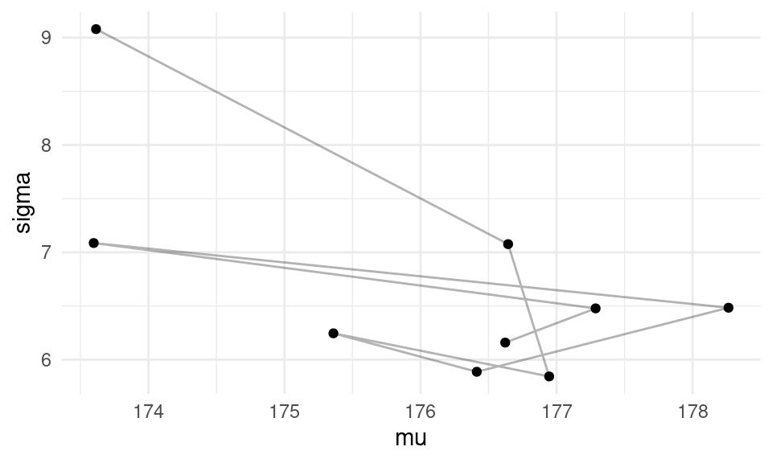 Y ahora vemos cómo se ven las simulaciones:
ggplot(filter(caminata, pasos > 1000, pasos< 10000, pasos %% 2 == 0),
aes(x = mu, y = sigma)) + geom_point(alpha = 0.1) 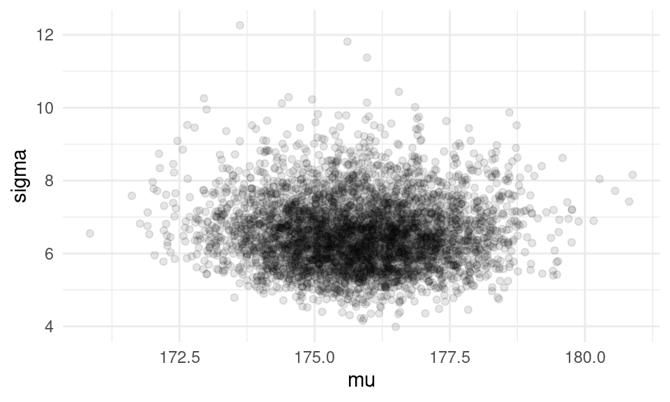
Y el diagnóstico de cada cadena:
ggplot(filter(caminata_g, pasos > 15000), aes(x = pasos, y = val)) +
geom_path(alpha = 0.3) +
facet_wrap(~parametro, ncol = 1, scales = "free") +
scale_y_continuous("")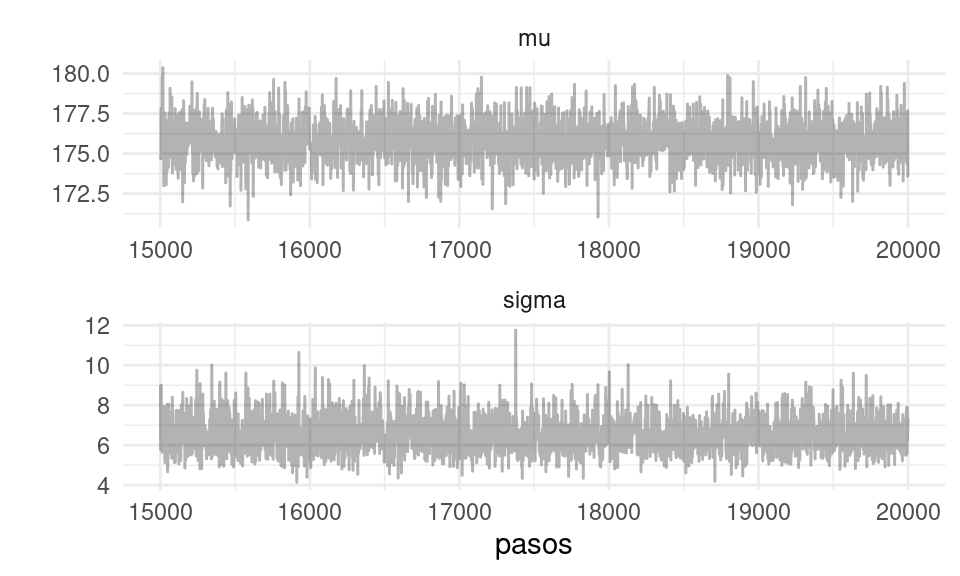 Estas cadenas parecen estar mezclando bien. Podemos resumirlas:
ggplot(filter(caminata_g, pasos > 5000), aes(x = val)) +
geom_histogram(fill = "gray") +
facet_wrap(~parametro, ncol = 1, scales = "free") 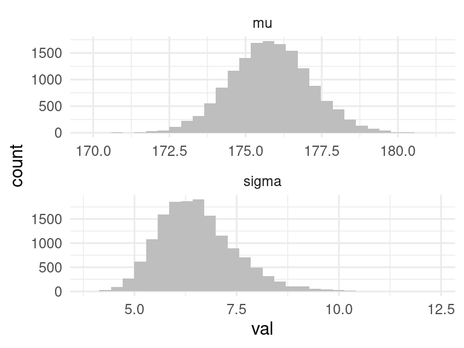
caminata_g %>%
filter(pasos > 1000) %>% # eliminamos la etapa de calentamiento
group_by(parametro) %>%
summarise(
mean(val),
sd(val),
median(val)
) %>%
mutate(across(is_double, round, 2))## # A tibble: 2 × 4
## parametro `mean(val)` `sd(val)` `median(val)`
## <chr> <dbl> <dbl> <dbl>
## 1 mu 176. 1.32 176.
## 2 sigma 6.54 0.95 6.44Y obtenemos un resultado similar a los anteriores.
Conclusiones y observaciones Metrópolis y Gibbs
Una generalización del algoritmo de Metrópolis es Metrópolis-Hastings.
El algoritmo de Metrópolis es como sigue:
- Generamos un punto inicial tal que \(p(\theta)>0\).
- Para \(i = 1,2,...\)
- Se propone un nuevo valor \(\theta^*\) con una distribución propuesta \(g(\theta^*|\theta^{(i)})\) es común que \(g(\theta^*|\theta^{(i)})\) sea una normal centrada en \(\theta^{(i)}\).
- Calculamos la probabilidad de aceptación
\[\alpha=\min\bigg\{\frac{p(\theta^*)}{p(\theta^{(i)})},1\bigg\},\] y aceptamos \(\theta^*\) con probabilidad \(p_{mover}\). Es así que el algorito requiere que podamos calcular el cociente en \(p_{mover}\) para todo \(\theta^{(i)}\) y \(\theta^*\), así como simular de la distribución propuesta \(g(\theta^*|\theta^{(i)})\), adicionalmente debemos poder generar valores uniformes para decidir si aceptar/rechazar.
En el caso de Metrópolis un requerimiento adicional es que la distribución propuesta \(g(\theta_{a}|\theta_b)\) debe ser simétrica, es decir \(g(\theta_{a}|\theta_b) = g(\theta_{b}|\theta_a)\) para todo \(\theta_{a}\), \(\theta_{b}\).
Metrópolis-Hastings generaliza Metrópolis, eliminando la restricción de simetría en la distribución propuesta \(g(\theta_{a}|\theta_b)\), sin embargo para corregir por esta asimetría debemos calcular \(\alpha\) como sigue:
\[\alpha=\min\bigg\{ \frac{p(\theta^*)}{g(\theta^*|\theta^{(i)})} \cdot \frac{g(\theta^{(i)}|\theta^*)}{p(\theta^{(i)})},1\bigg\}\] La generalización de Metrópolis-Hastings puede resultar en algoritmos más veloces.
Se puede ver Gibbs como una generalización de Metrópolis-Hastings, cuando estamos actualizando un componente de los parámetros, la distribución propuesta es la distribución posterior para ese parámetro, por tanto siempre es aceptado.
Comparado con Metrópolis, Gibbs tiene la ventaja de que no se necesita afinar los parámetros de una distribución propuesta (o seleccionar siquiera una distribución propuesta). Además que no hay pérdida de simulaciones debido a rechazo. Por su parte, la desventaja debemos conocer las distribuciones condicionales y poder simular de ellas.
En el caso de modelos complicados se utilizan combinaciones de Gibbs y Metrópolis. Cuando se consideran estos dos algoritmos Gibbs es un método más simple y es la primera opción para modelos condicionalmente conjugados. Sí solo podemos simular de un subconjunto de las distribuciones condicionales posteriores, entonces podemos usar Gibbs siempre que se pueda y Metrópolis unidimensional para el resto, o de manera más general separamos en bloques, un bloque se actualiza con Gibbs y otro con Metrópolis.
El algoritmo de Gibbs puede atorarse cuando hay correlación alta entre los parámetros, reparametrizar puede ayudar, o se pueden usar otros algoritmos.
JAGS (Just Another Gibbs Sampler), WinBUGS y OpenBUGS son programas que implementan métodos MCMC para generar simulaciones de distribuciones posteriores. Los paquetes
rjagsyR2jagspermiten ajustar modelos en JAGS desdeR. Es muy fácil utilizar estos programas pues uno simplemente debe especificar las distribuciones iniciales, la verosimilitud y los datos observados. Para aprender a usar JAGS se puede revisar la sección correspondiente en las notas de 2018, ahora nos concentraremos en el uso de Stan.
HMC y Stan
It appears to be quite a general principle that, whenever there is a randomized way of doinf something, then there is a nonrandomized way that delivers better performance but requires more thought. -E.T. Jaynes
Stan es un programa para generar muestras de una distribución posterior de los
parámetros de un modelo, el nombre del programa hace referencia a Stanislaw Ulam (1904-1984) que fue pionero en
los métodos de Monte Carlo. A diferencia de JAGS y BUGS, los pasos de la cadena
de Markov se generan con un método llamado Monte Carlo Hamiltoniano (HMC). HMC
es computacionalmente más costoso que Metrópolis o Gibbs, sin embargo, sus
propuestas suelen ser más eficientes, y por consiguiente no necesita muestras
tan grandes. En particular cuando se ajustan modelos grandes y complejos (por
ejemplo, con variables con correlación alta) HMC supera a otros.
Diagnósticos generales para MCMC
Cuando generamos una muestra de la distribución posterior usando MCMC, sin importar el método (Metrópolis, Gibbs, HMC), buscamos que:
Los valores simulados sean representativos de la distribución posterior. Esto implica que no deben estar influenciados por el valor inicial (arbitrario) y deben explorar todo el rango de la posterior, con suficientes retornos para evaluar cuánta masa hay en cada región.
Debemos tener suficientes simulaciones de tal manera que las estimaciones sean precisas y estables.
Queremos tener un método eficiente para generar las simulaciones.
En la práctica intentamos cumplir lo más posible estos objetivos, pues aunque en principio los métodos MCMC garantizan que una cadena infinitamente larga logrará una representación perfecta, siempre debemos tener un criterio para cortar la cadena y evaluar la calidad de las simulaciones.
Representatividad
Burn-in e iteraciones iniciales- En primer lugar, en muchas ocasiones las condiciones iniciales de las cadenas están en partes del espacio de parámetros que son “atípicos” en términos de la posterior. Así que es común quitar algunas observaciones iniciales (iteraciones de burn-in) para minimizar su efecto en resúmenes posteriores.
Por ejemplo, para el ejemplo de los cantantes, podemos ver que las iteraciones iniciales tienen como función principal llegar a las regiones de probabilidad posterior alta:
log_p <- crear_log_posterior_norm(cantantes$estatura_cm, mu_0, n_0, a, b)
log_post <- function(pars) { log_p(pars[1], pars[2]) }
set.seed(823)
metro_normal <- crear_metropolis(log_post, sigma_salto = 0.5)
sim_tbl <- metro_normal(c(mu = 162, sigma = 1), 5000)
ggplot(sim_tbl %>% filter(iter_num < 500), aes(x = mu, y = sigma)) + geom_path(alpha = 0.5) + geom_point(aes(colour = iter_num))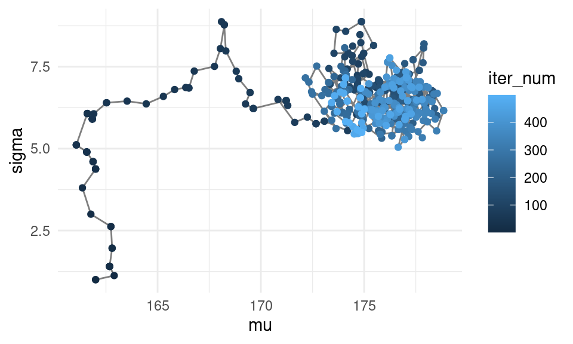
De modo que puede ser buena idea eliminar las primeras iteraciones. En teoría, no es necesario hacer esto si hacemos suficientes iteraciones, pues la cadena va a terminar en su estado estable explorando la posterior. En la práctica, y con pocas iteraciones, puede ayudar un poco a mejorar la precisión numérica de las cantidades que queramos calcular.
sim_g <- sim_tbl %>% pivot_longer(-iter_num,
names_to = "parametro",
values_to = "valor")
todas <- ggplot(sim_g, aes(x = iter_num, y = valor)) +
geom_line(alpha = 0.5) +
facet_wrap(~ parametro, ncol = 1, scales = "free_y") +
labs(subtitle = "Todas las simulaciones")
sin_burnin <-
sim_g %>% filter(iter_num > 200) %>%
ggplot(aes(x = iter_num, y = valor)) +
geom_line(alpha = 0.5) +
facet_wrap(~ parametro, ncol = 1, scales = "free_y") +
labs(subtitle = "Quitando 200 de burn-in")
todas + sin_burnin
Convergencia a estado límite. Para determinar la convergencia es conveniente realizar más de una cadena: buscamos ver si realmente se ha olvidado el estado inicial, si las distribuciones de cada cadena son consistentes unas con otras, y revisar que algunas cadenas no hayan quedado atoradas en regiones inusuales del espacio de parámetros.
Inicializamos las cadenas con valores al azar en rangos razonables (por ejemplo simulando de la inicial):
set.seed(8513)
valores_iniciales <- tibble(mu_0 = rnorm(4, 160, 20),
sigma_0 = runif(4, 0, 20),
cadena = 1:4)
sims_tbl <- valores_iniciales %>%
mutate(sims = map2(mu_0, sigma_0,
~ metro_normal(c(mu = .x, sigma = .y), 300) )) %>%
unnest(sims)
ggplot(sims_tbl, aes(x = iter_num, y = sigma, colour = factor(cadena))) +
geom_line()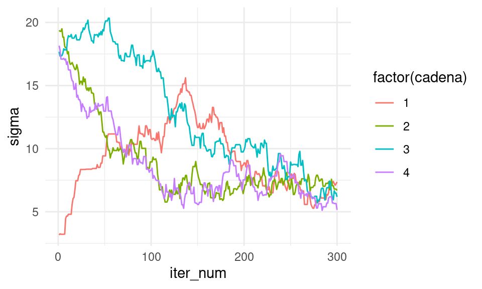
Y este es un ejemplo donde claramente las cadenas no han alcanzado un estado estable: tienen muy distintas medias y varianzas. Por ejemplo:
set.seed(83243)
sims_tbl <- valores_iniciales %>%
mutate(sims = map2(mu_0, sigma_0,
~ metro_normal(c(mu = .x, sigma = .y), 20000) )) %>%
unnest(sims)
ggplot(sims_tbl, aes(x = iter_num, y = sigma, colour = factor(cadena))) +
geom_line()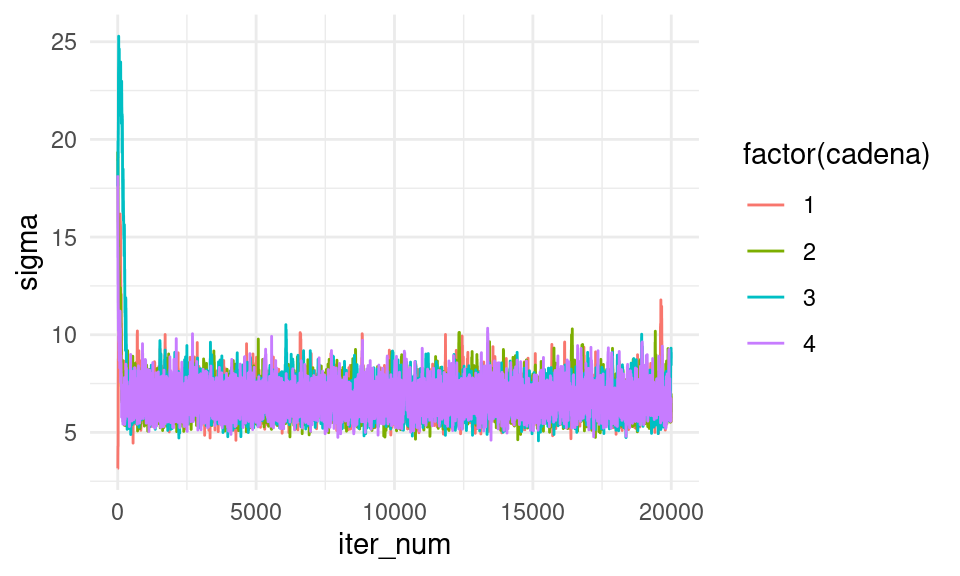
Y este resultado se ve mejor. La parte transición hacia las zonas de alta probabilidad pasa antes de unas 1000 iteraciones. Podemos hacer más simulaciones, o eliminar como burn-in las primiras iteraciones:
media_g <- ggplot(sims_tbl %>% filter(iter_num > 2000),
aes(x = iter_num, y = mu, colour = factor(cadena))) +
geom_line()
sigma_g <- ggplot(sims_tbl %>% filter(iter_num > 2000),
aes(x = iter_num, y = sigma, colour = factor(cadena))) +
geom_line()
media_g / sigma_g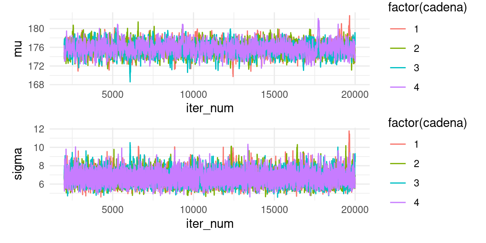
Las gráficas anteriores nos ayudan a determinar si elegimos un periodo de calentamiento adecuado o si alguna cadena está alejada del resto.
Una vez que las cadenas están en estado estable, podemos usar todas las simulaciones juntas para resumir:
head(sims_tbl)## # A tibble: 6 × 6
## mu_0 sigma_0 cadena iter_num mu sigma
## <dbl> <dbl> <int> <int> <dbl> <dbl>
## 1 155. 3.16 1 1 155. 3.16
## 2 155. 3.16 1 2 155. 3.16
## 3 155. 3.16 1 3 155. 3.16
## 4 155. 3.16 1 4 155. 3.16
## 5 155. 3.16 1 5 155. 3.50
## 6 155. 3.16 1 6 155. 3.81# medias posteriores
sims_tbl %>%
summarise(mu = mean(mu), sigma = mean(sigma))## # A tibble: 1 × 2
## mu sigma
## <dbl> <dbl>
## 1 176. 6.77Además de realizar gráficas podemos usar la medida de convergencia \(\hat{R}\). La medida \(\hat{R}\) se conoce como el factor de reducción potencial de escala o diagnóstico de convergencia de Gelman-Rubin, esta es una estimación de la posible reducción en la longitud de un intervalo de confianza si las simulaciones continuaran infinitamente. \(\hat{R}\) es aproximadamente la raíz cuadrada de la varianza de todas las cadenas juntas dividida entre la varianza dentro de cada cadena. Si \(\hat{R}\) es mucho mayor a 1 esto indica que las cadenas no se han mezclado bien. Una regla usual es iterar hasta alcanzar un valor \(\hat{R} \leq 1.1\) para todos los parámetros.
\[\hat{R} \approx \sqrt{\frac{\hat{V}}{W}}\]
donde \(B\) es la varianza entre las cadenas, \(W\) es la varianza dentro de las cadenas
\[B = \frac{N}{M-1}\sum_m (\hat{\theta}_m - \hat{\theta})^2\] \[W = \frac{1}{M}\sum_m \hat{\sigma}_m^2\]
Y \(\hat{V}\) es una estimación del varianza de posterior de \(\theta\):
\[\hat{V} = \frac{N-1}{N}W + \frac{M+1}{MN}B\] #### Ejemplo {-} En nuestro ejemplo anterior, tenemos
sims_tbl %>%
pivot_longer(mu:sigma, names_to = "parametro", values_to = "valor") %>%
group_by(parametro, cadena) %>%
summarise(media = mean(valor), num = n(), sigma2 = var(valor)) %>%
summarise(N = first(num),
M = n_distinct(cadena),
B = N * var(media),
W = mean(sigma2),
V_hat = ((N - 1) / N) * W + (M + 1)/(M * N) * B,
R_hat = sqrt(V_hat / W)) ## # A tibble: 2 × 7
## parametro N M B W V_hat R_hat
## <chr> <int> <int> <dbl> <dbl> <dbl> <dbl>
## 1 mu 20000 4 1281. 4.29 4.37 1.01
## 2 sigma 20000 4 121. 1.31 1.32 1.00Y verificamos que los valores de \(\hat{R}\) son cercanos a uno, lo cual indica que este diagnóstico es aceptable. Si hubiéramos trabajado con las primeras 300 iteraciones
sims_tbl %>%
filter(iter_num < 300) %>%
pivot_longer(mu:sigma, names_to = "parametro", values_to = "valor") %>%
group_by(parametro, cadena) %>%
summarise(media = mean(valor), num = n(), sigma2 = var(valor)) %>%
summarise(N = first(num),
M = n_distinct(cadena),
B = N * var(media),
W = mean(sigma2),
V_hat = ((N - 1) / N) * W + (M + 1)/(M * N) * B,
R_hat = sqrt(V_hat / W)) ## # A tibble: 2 × 7
## parametro N M B W V_hat R_hat
## <chr> <int> <int> <dbl> <dbl> <dbl> <dbl>
## 1 mu 299 4 32334. 40.4 175. 2.08
## 2 sigma 299 4 7394. 11.9 42.8 1.89Y estos valores indican problemas en la convergencia de las cadenas. Es necesario diagnosticar el problema, que en este caso resolvemos incrementando el número de iteraciones.
Precisión
Una vez que tenemos una muestra representativa de la distribución posterior, nuestro objetivo es asegurarnos de que la muestra es lo suficientemente grande para producir estimaciones estables y precisas de la distribución.
Para ello usaremos el tamaño efectivo de muestra, Si las simulaciones fueran independientes \(N_{eff}\) sería el número total de simulaciones; sin embargo, las simulaciones de MCMC suelen estar correlacionadas, de modo que cada iteración de MCMC es menos informativa que si fueran independientes.
Ejemplo: Si graficaramos simulaciones independientes, esperaríamos valores de autocorrelación chicos:
acf(rgamma(1000,1,1))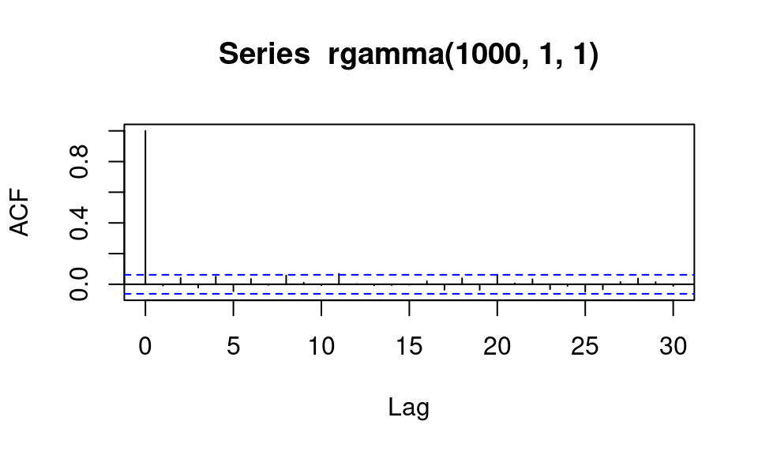 Sin embargo, los valores que simulamos tienen el siguiente perfil de autocorrelación:
sigma_metro_sims <- sims_tbl %>% filter(cadena==4) %>% pull(mu)
acf(sigma_metro_sims)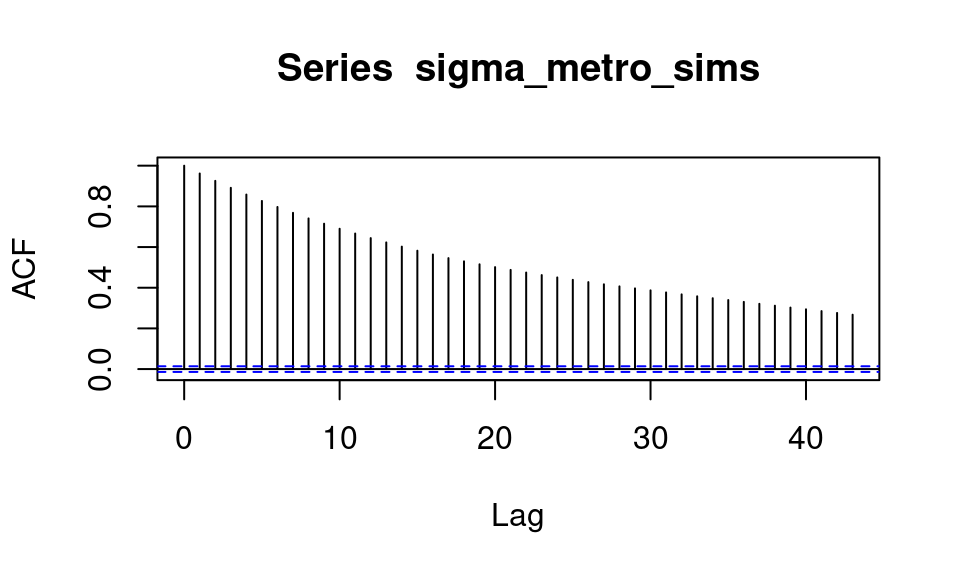
El tamaño efectivo de muestra nos dice qué tamaño de muestra de observaciones independientes nos daría la misma información que las simulaciones de la cadena. Una manera de manera relativamente simple de estimarlo es:
\[N_{eff} = \frac{N}{1+2\sum_{k=1}^\infty ACF(k)} \]
Usualmente nos gustaría obtener un tamaño efectivo de al menos \(100\) (para cálculo de medias y varianzas posteriores). Esta cantidad usualmente se reporta en el software (con mejores estimaciones que la de la fórmula de arriba), y es necesario checarlo.
En nuestro ejemplo hacemos una aproximación como sigue:
calc_acf <- function(x){
valores_acf <- acf(x, lag.max = 1000, plot = FALSE)$acf %>% as.numeric()
valores_acf[-1]
}
acf_tbl <- sims_tbl %>%
pivot_longer(mu:sigma, names_to = "parametro", values_to = "valor") %>%
group_by(parametro, cadena) %>%
summarise(N = n_distinct(iter_num), k = 1:1000, acf = calc_acf(valor)) %>%
summarise(N = first(N), N_eff = N / (1 + 2 * sum(acf)))
acf_tbl## # A tibble: 8 × 4
## # Groups: parametro [2]
## parametro cadena N N_eff
## <chr> <int> <int> <dbl>
## 1 mu 1 20000 251.
## 2 mu 2 20000 700.
## 3 mu 3 20000 104.
## 4 mu 4 20000 394.
## 5 sigma 1 20000 421.
## 6 sigma 2 20000 411.
## 7 sigma 3 20000 93.9
## 8 sigma 4 20000 724.Nótese que algunas cadenas tienen un tamaño efectivo de muestra relativamente bajo para el número de iteraciones que hicimos. De cualquier forma, el agregado sobre todas las cadenas es suficientemente grande para calcular resúmenes básicos:
acf_tbl %>% group_by(parametro) %>%
summarise(N = sum(N), N_eff = sum(N_eff))## # A tibble: 2 × 3
## parametro N N_eff
## <chr> <int> <dbl>
## 1 mu 80000 1450.
## 2 sigma 80000 1650.Sin embargo, podemos hacer más simulaciones si es necesario, por ejemplo para aproximar de manera apropiada percentiles en las colas.
Eficiencia
Hay varias maneras para mejorar la eficiencia de un proceso MCMC:
Paralelizar, no disminuimos el número de pasos en las simulaciones pero podemos disminuir el tiempo que tarda en correr.
Cambiar la parametrización del modelo o transformar los datos.
Adelgazar la muestra cuando tenemos problemas de uso de memoria,
consiste en guardar únicamente los \(k\)-ésimos pasos de la cadena y resulta en cadenas con menos autocorrelación .
Recomendaciones generales
Gelman and Hill (2006) recomienda los siguientes pasos cuando uno esta simulando de la posterior:
Cuando definimos un modelo por primera vez establecemos un valor bajo para el número de iteraciones. La razón es que la mayor parte de las veces los modelos no funcionan a la primera por lo que sería pérdida de tiempo dejarlo correr mucho tiempo antes de descubrir el problema.
Si las simulaciones no han alcanzado convergencia aumentamos las iteraciones a \(500\) ó \(1000\) de tal forma que las corridas tarden segundos o unos cuantos minutos.
Si tarda más que unos cuantos minutos (para problemas del tamaño que veremos en la clase) y aún así no alcanza convergencia entonces juega un poco con el modelo (por ejemplo intenta transformaciones lineales), para JAGS Gelman sugiere más técnicas para acelerar la convergencia en el capitulo \(19\) del libro Data Analysis Using Regression and Multilevel/Hierarchical models. En el caso de Stan veremos ejemplos de reparametrización, y se puede leer más en la guía.
Otra técnica conveniente cuando se trabaja con bases de datos grandes (sobre todo en la parte exploratoria) es trabajar con un subconjunto de los datos, quizá la mitad o una quinta parte.